הטיול שלנו להר השחור (מונטנגרו)
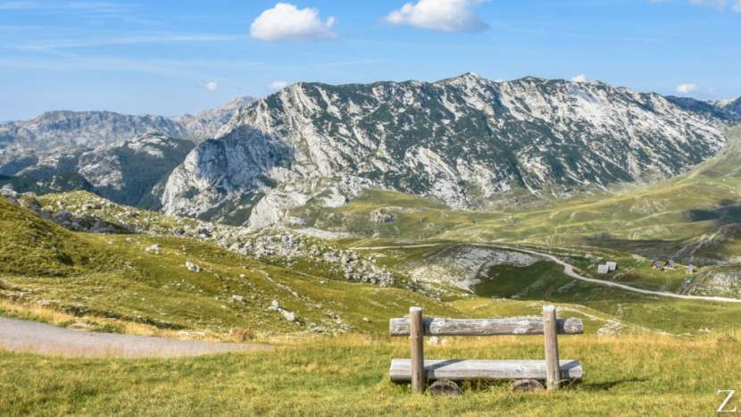
הטיול שלנו למונטנגרו
תקופת החגים השנה היתה פשוט מושלמת לטיולים, אז כמו כל עם ישראל גם אנחנו חיפשנו לנו יעד לברוח קצת מארצנו הקטנטונת. היות ויש איתנו שני צוציקים בני 9 חודשים, שקטנים מידי להישאר עם סבתא ליותר מיממה (לא בטוח שגם הסבתא היתה מוכנה לשמור על האוצרות ליותר מ-24 שעות) יעדים חלומיים כמו יפן, צפון נורבגיה וקנדה ירדו מהפרק (לא לעוד הרבה זמן אני מקווה), כי הבעל לא היה מוכן להסתכן בטיסה ארוכה כלכך.
אז נשארנו עם אירופה, וכחובבי טבע מושבעים החלטנו על מונטנגרו- מדינה קטנה ומרחקי נסיעה קטנים V, יש טיסה ישירה V, טיסה קצרה יחסית עוד V- מושלם! בכל זאת מונטנגרו לא דורשת חודש ימים של טיול, לכן החלטנו להסתפק ב-10 ימים, בין ראש השנה וסוכות (ככה גם קיווינו שיהיה פחות עומס בשדות התעופה- מה שהיה נכון), הזמנו כרטיסים ישירות דרך ישראייר (שמבצעת את הטיסה הישירה לטיבאת) וחרשתי על "למטייל" בקריאת טיפים/ בלוגים ומה לא כדי לתכנן את הטיול.
קצת לוגיסטיקה: עם תאומים בני 9 חודשים הטיול הוא בהחלט לוגיסטיקה! עוד לפני שלב האריזה צריך לחפש רכב מספיק גדול להכיל מזוודות ואת העגלה שלנו (עגלת תאומים תופסת ה-מ-ו-ן מקום בבגאז'). למזלנו, הרשת מלאה בהמלצות על אבי בלוב מחברת קולומבוס (ישראלי שחי במונטנגרו ומשכיר רכבים), לכן פנינו אליו ומיד נמצא לנו רכב- פורד פוקוס סטיישן, כולל 2 כסאות בטיחות! וכאן אני מצטרפת לשפע ההמלצות על אבי- בחור מקסים, שירותי, אדיב, זמין לכל שאלה ועוזר המון בתכנון המסלול וטיפים.
אחרי שסגרנו רכב צריך לחפש מקום לינה. הטיול הראשון שלנו עם הקטנים היה בקראוון ככה שזה חסך לנו את הצרות של לינה והתניידות בכל בוקר. הפעם, התאומיקים גדולים יותר אז זו הזדמנות מצויינת לנסות טיול מתגלגל "לייט"- החלפת מקום לינה אחת למספר ימים. בגלל שמונטנגרו קטנה, אין שום בעיה לעשות טיולי כוכב ולכן החלטנו ללון 5 ימים באיזור בודווה שבדרום, לעלות ל-3 ימים לז'בליאק שבצפון, עוד לילה בקולאשין (כדי להקל על הנסיעה דרומה חזרה) ולסיום יומיים בטיבאת ליד השדה). עכשיו נשאר למצוא מלונות בבוקינג ועם תינוקות זה לא פשוט, צריך לכתוב לכל מלון אם מספקים 2 עריסות (ולא אחת), וכן יהיה חשוב לנו שיהיו לפחות שני חדרים כדי שאנחנו נוכל לשבת בערב בסבבה על כוס קפה/יין כשהילדים ישנים. בסוף מצאנו לנו דירות (שהיו מצוינות) והתפנקנו לילה אחד בסוויטה בקולאשין. ריכוז עלויות, מקומות לינה וטיפים לטיול עם תאומים/תינוקות בסוף הפוסט.
כמה מילים על מונטנגרו: מדובר במדינה קטנה והררית, השוכנת בדרום אירופה, בחלקו המערבי של הבלקן. המדינה גובלת בקרואטיה במערב, בבוסניה והרצגובינה בצפון-מערב, בסרביה בצפון-מזרח, בקוסובו במזרח, באלבניה בדרום ובים האדריאטי בדרום-מערב.
בעבר הייתה מונטנגרו מדינה עצמאית בשנים 1878–1918 תחת שלטונו של ניקולא הראשון. אחר כך הצטרפה מונטנגרו ליוגוסלביה, ולאחר שזו התפרקה בתחילת שנות התשעים, נשארה מונטנגרו רק עם סרביה באיחוד הפדרלי. בשנת 2006 פרשה מונטנגרו מהאיחוד והכריזה שוב על עצמאותה. בשנת 2017הצטרפה מונטנגרו לבריתנאט"ו. ב-21 במאי 2006, נערך משאל עם שני בנוגע להחלטה האם להתנתק מסרביה ולהכריז על עצמאות. שיעור ההשתתפות במשאל העם היה גבוה: 86 אחוז. רוב המיעוטים וחלק נכבד מהבוחרים ממוצא סרבי תמכו בהשגת עצמאות. במשאל העם הושג רוב של כ-55.4% בעד ההפרדות, ובכך נסללה הדרך להתפרקות הסופית של שש הרפובליקות שהיוו בעבר את יוגוסלביה. ב- 3.6.2006 הכריזה מונטנגרו על עצמאותה ועל היפרדותה מסרביה, שקיבלה את תוצאות משאל העם באכזבה אך לא התנגדה למהלך. ב-28 ביוני 2006 התקבלה כחברה ה-192 של ארגון האומות המאוחדות.אז גם הוקם צבא מונטנגרו.
כלכלת מונטנגרו היא כלכלה מבוססת שירותים, הנמצאת במעבר מכלכלה מתוכננת שבה חולשת הממשלה על הפעילות הכלכלית, לכלכלת שוק. ענפי השירותים מעסיקים 68% מן העובדים ענף התיירות בפרט מהווה מקור הכנסה חשוב. בתעשייה מועסקים כ-30% מן העובדים; הענפים העיקריים הם עיבוד פלדה ואלומיניום. החקלאות, שעליה התבססה כלכלת מונטנגרו עד אמצע המאה ה-20, איבדה מחשיבותה. ענפי החקלאות העיקריים הם דגנים, טבק, תפוחי אדמה, פרי הדר, כרמים, זיתים וגידול צאן.בשנים האחרונות ישנו ניסיון לפתח את ענף התיירות במדינה. למונטנגרו אין מטבע משלה. האירו מהווה הילך חוקי במדינה, אף שהמדינה אינה חלק מגוש האירו.
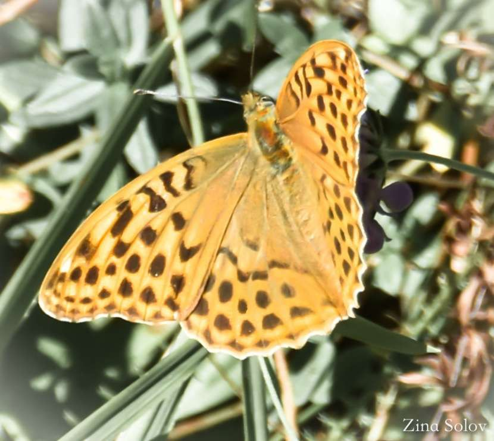
ועכשיו לטיול :)
יום 1, 13.9.18:
כמו חיילים טובים אנחנו מתייצבים בנתב"ג בשעה 8 בבוקר (הטיסה מתוכננת ל-11) רק כדי לגלות שהטיסה מתעכבת (ל-12 וחצי). עשינו צ'ק אין, ובילינו בטרקלין עד הטיסה (הילדים נהנו לזחול על הרצפה). למזלנו הדיילים התחשבו בנו וארגנו לנו שלשה ריקה (עם תאומים אי אפשר לשבת ביחד בשלשה מלאה בגלל כמות מסיכות חמצן), טיסה של שעתיים וחצי עברה בנעימים, התאומיקים שיחקו, אכלו וישנו. הנחיתה היתה מדהימה כאשר המטוס טס לו ממש בין ההרים וברקע הים האדריאטי. נחתנו בשעה 15:30, בשדה התעופה של טיבאת, עיירה פיצית ושדה תעופה עוד יותר פיצי. נציג של חברת קולומבוס חיכה לנו מחוץ לשדה ומיד הוביל אותנו לרכב, בזמן שהוא הסביר לנו על הרכב, אבי, הבעלים של החברה הגיע להגיד שלום ולתת טיפים שלו. הרכב מצוייד במודם ככה שיש וייפיי קבוע ברכב (מה שחסך מאיתנו לקנות סים מקומי, לא שזו הוצאה גדולה- 5 יורו ל-20 גיגה).
עד שסיימנו עם הרכב (שהצליח להכיל 2 מזוודות- אחת גדולה ואחת בינונית, עגלת תאומים, תיק החתלה, 2 תיקי גב, 2 כסאות בטיחות, 2 תינוקות ו-2 הורים) השעה כבר ארבע ארח הצהריים (לפי שמעון מונטנגרו) משמע כבר חמש לפי שעון הילדים (שמסונכרנים לפי שעון הארץ). אנחנו עוצרים להצטיידות בסניף וולי (Voli) אחד הזולים, שם אנו נדהמים ממגוון הגרברים (ירקות, בשר, אורז) וציוד התינוקות שיש. החלטנו גם לנשנש במסעדה ליד כי לא היינו בטוחים מה יש ליד הדירה ואם בכלל נצליח לצאת (החלטה שהסתברה כנבונה). אחרי שאכלנו והצטיידנו בקניות, אנו נוסעים לכיוון בודווה (כחצי שעה נסיעה) לדירה שלנו (Apartmani Svetionik) שממוקמת באיזור Rafailovici (זה רבע שעה דרומית לבודווה). וכאן גילינו את הבעיה ביעד הררי, הGPS מוביל אותנו לפי כתובת, שהיא בקצה סמטה שלא ניתן להגיע לשם עם רכב, אנחנו בלי סים ככה שאני לא יכולה להתקשר למלון, הילדים כבר צורחים ברכב מרוב עייפות וכולנו עצבניים בטירוף. עד שמצאנו את המקום, כבר יצאה לנו הנשמה והיינו על סף גירושים, ואז... דלפק הקבלה ריק! למזלנו מדובר בחוף שוקק חיים ומסעדות, ביקשתי מהמסעדה הסמוכה להתקשר לטלפון של המקום רק אז הסתבר לנו שיש עוד דלפק קבלה למעלה על ההר וגם שיש שם יש חניה נורמאלית. בסופו של דבר זכינו בחניה מטר מהחדר בראש ההר! הדירה עצמה מאוד מרווחת ומאובזרת עם נוף מטורף! אבל, אי אפשר לרדת לטיילת עם העגלה (כי יש שפע מדרגות עד המעלית שהעגלה לא נכנסת בה) מיד מקלחות לילדים, אוכל ולישון... ואנחנו סוף סוף זוכים לנוח עם כוס בירה ולהינות מהנוף המדהים מהמרפסת, אין לנו כבר כוח לעשות כלום היום רק לנוח ולישון.
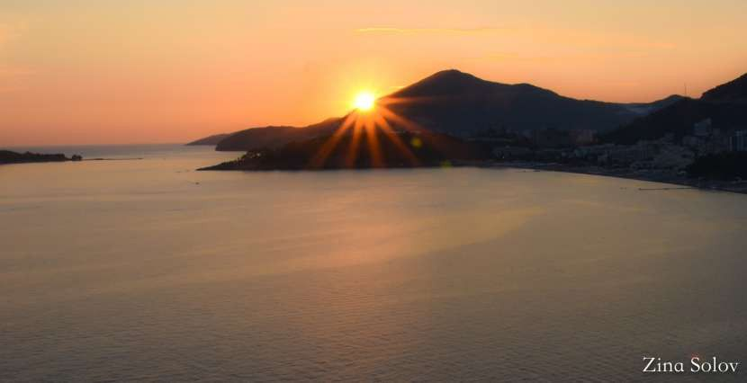
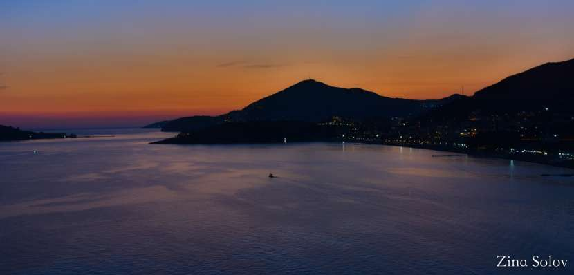
יום 2, 14.9.18:
קמנו לבוקר שטוף שמש, החלטנו לעשות היום יום קליל ולטייל בסביבת הדירה. התחנה הראשונה שלנו להיום היא פארק מילוצ'ר, האמת, לא מצאתי כלכך הרבה מידע על האתר רק שמדובר בגן בוטאני יפה וממנו אפשר להגיע רגלית לאי סווטי סטפן (המלון היוקרתי ששוכן על האי הסמוך). רציתי להגיע לאתר כי ראיתי כמה תמונות שלו וזה נראה לי כמקום שווה ביקור. לצערי גם לא מצאתי מספיק מידע כדי להבין אם המקום נגיש לעגלות.
נסיעה קצרצרה מהדירה מביא אותנו לפארק, נראה שמדובר במתחם חביב מלא בשבילי הליכה ומוצל ע"י המוני עצים. חנינו החלטנו ללכת לכיוון החוף, נשקף משם נוף מדהים על האי סווטי סטפן (אי שהפך למלון, רק 1000 יורו ללילה לחדר בסיסי), משם יש שביל הליכה דרך צלע ההר לכיוון האי אולם לצערנו מדובר בשביל שאינו עביר כלל לעגלה. בגלל שהקטנים נרדמו לשנת בוקר, לא רצינו להעיר אותם ולהעביר אותם למנשא לכן טיילנו עוד קצת באיזור הפארק, התרשמנו מהרבה חופים מדהימים שלצערנו סגורים (כולם שייכים למלונות פרטיים באיזור)
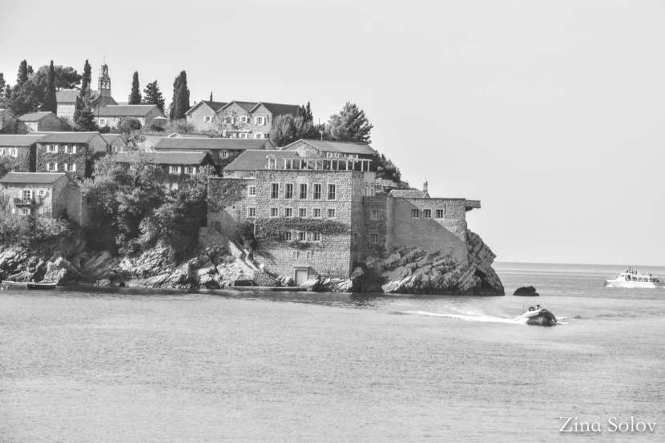
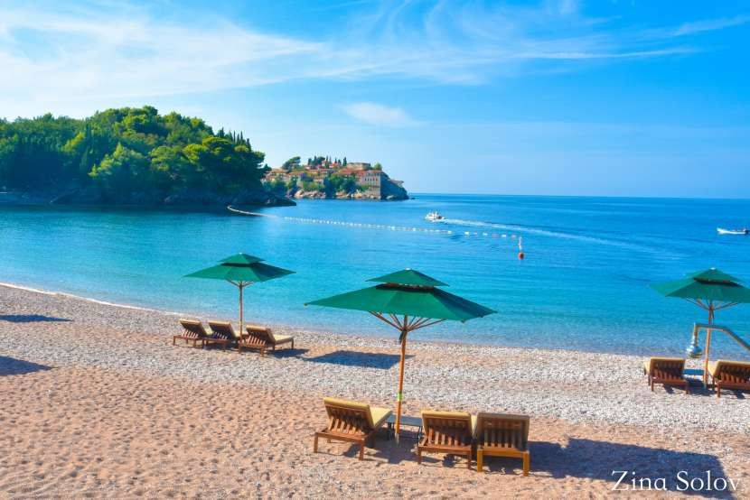
משם החלטנו לטבול במימי הים האדריאטי ולכן המשכנו לכיוון סווטי סטפן, יש שם שני חופים- חוף של המלון שהוא בתשלום (100 יורו ל-2 מיטות שיזוף) וחוף חינמי מהצד השני, היות ואנחנו עדיין לא אוליגרכים ולא ממש רוצים לשלם סכומי עתק על מיטת שיזוף, כמובן שנסענו לחוף החינמי. רק לידיעה שהחניה שם היא בין היקרות במונטנגרו- 2 יורו לשעה, במילא לא תכננו לבלות שם יום שלם ככה שלא כלכך הפריע לנו המחיר.
מדובר בחוף חביב (מצד אחד יש חוף חולי, אנחנו היינו בחוף עם אבנים), פרשנו מחצלת והילדודס נהנו לטעום את כל סוגי האבנים שנקרו בדרכם, טבלנו קצת במים הצלולים והנעימים והעברנו שעתיים כיפיות בים. החיסרון היחיד היה הדבורים, מסתבר שמונטנגרו מפוצצת בדבורים פשוט בכל פינה יש איזה דבורה סקרנית או 2 שיבואו להגיד שלום- ראו הוזהרתם.
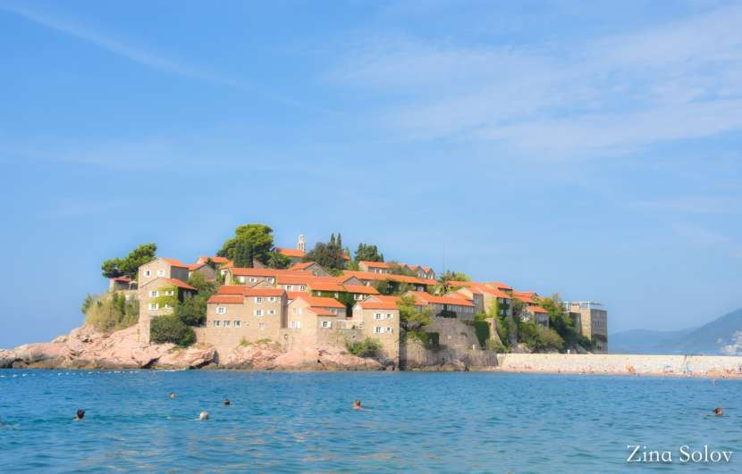
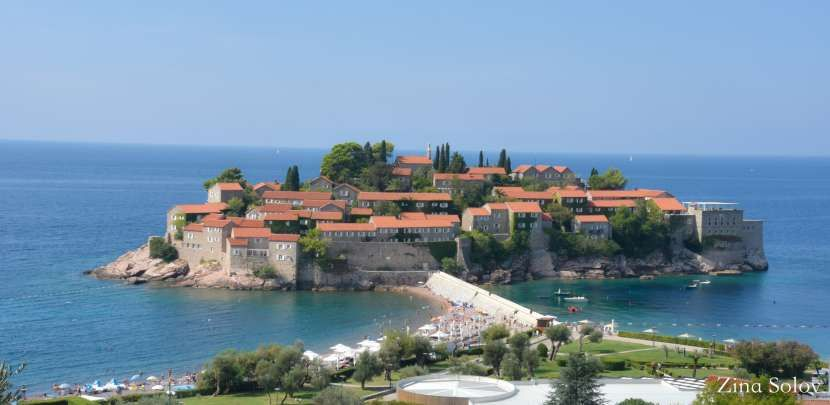
משם החלטנו לטייל קצת בבודווה, העיר המרכזית בדרום מונטנגרו, עצרנו לתצפית קצרה על סווטי סטפן מלמעלה וחזרנו לכיוון צפון. נסיעה של 20 דקות הביאה אותנו למרכז בודווה (כיוונו את הוייז לעיר העתיקה). כל החניונים באיזור הם בתשלום ואני באמת ממליצה לחנות בחניון מסודר ולשלם מאשר להסתכן בדוחות (יש שם משטרה בכל פינה) ובאמת שלא חסר חניונים ומקומות חניה. מצאנו מסעדה נחמדה על הטיילת (מסעדת דגים) והתיישבנו לצהריים, לצערנו לא היה מרק לילדים, וגם פירה לא (וגם כסאות אוכל לתינוקות- אבל זה כבר פינוק לא?), אז פשוט מעכנו להם תפוחי אדמה במזלג וערבבנו עם הגרבר ירקות שקנינו בסופר- יצאה עיסה מגעילה בטירוף אבל הם נהנו ממנה כאילו זה מעדן אלוהי, לכו תבינו תינוקות. אנחנו לעומת זאת סעדנו בסטייק טונה עסיסי וטעים ובירה כמובן (איך לא? אנחנו בחופש). לאחר ששבענו, השכבנו את הילדים לשנ"צ בעגלה ובזמן שהם נרדמו הלכנו לתור את העיר העתיקה.
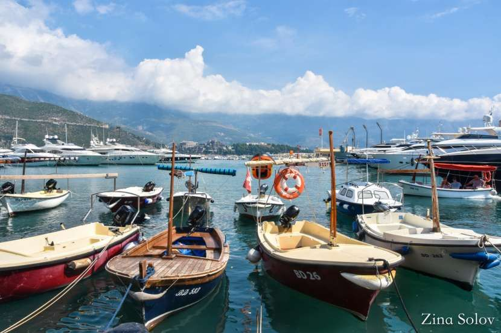
העיירה בודווה בת כ-2500 שנה וידועה עוד מהתקופה הרומית כ-בודואה. העיר העתיקה נמצאת על סלע בולט מעל הים ומוקפת חומה. ברעידת אדמה שפקדה את מונטנגרו ואלבניה ב-15 באפריל 1979 נפגעו 400 מבנים בעיר העתיקה וגם החומות ניזוקו. לאחר שיקום ושחזור קפדני במשך שמונה שנים, אין כיום סימן לנזק.
טיילנו בנחת בין הסמטאות ושפע החנויות, מסעדות וגלידריות, כשפתאום יצאנו לכיכר ושם יושב לו בפינה בחור צעיר ומנגן על גיטרה מנגינות רגועות ונעימות, החומה באיזור נמוכה וממנה נשקף הים וממול כנסיה מקסימה מוקפת דקלים. המוזיקה שלו פשוט שיוועה למקום אווירה קסומה, אנחנו התיישבנו לנו בפינה ופשוט נהננו מהרגע, שלווה אמיתית שממש לא אופיינית למקום.
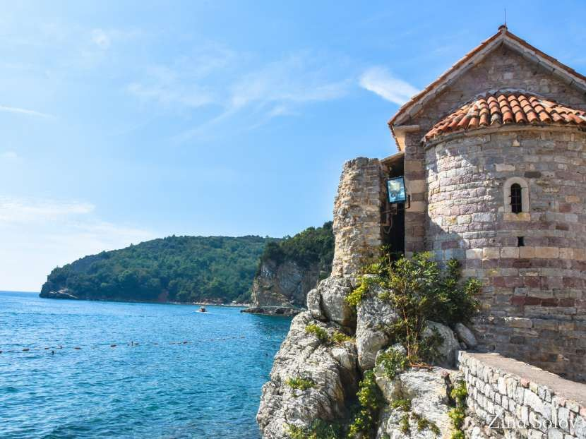
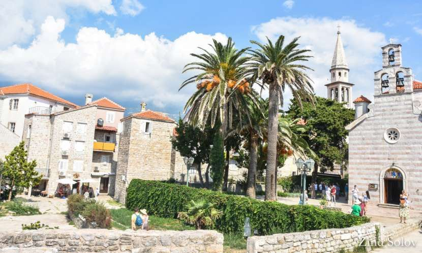
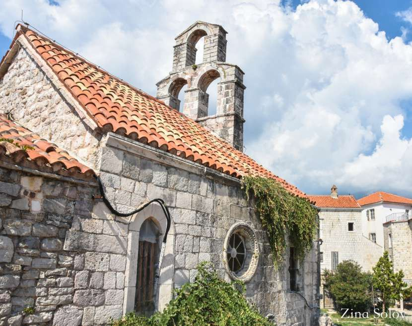
למי שמעוניין ניתן לעלות למוזיאון ולתצפית מהמגדל של החומה, הכניסה עולה 3 יורו, אנחנו במקום החלטנו להמשיך לטייל לכיוון חוף מורגן שנחשב לאחד החופים היפים של בודווה. מדובר בהליכה של 10 דקות מהעיר העתיקה, הליכה מדהימה, שביל מסודר שעובר על שפת הסלע (עביר לעגלות) מוביל לחוף, ממנו נשקפת העיר העתיקה של בודווה, ממליצה להתקדם עד פסל הרקדנית ורק אז להסתובב אחורה, מצפה לכם נוף משגע! היום יש מעטה עננים מעל ההרים שמוסיפים מסגרת מדהימה לרקע - תמונה שווה אלף מילים אז הנה:
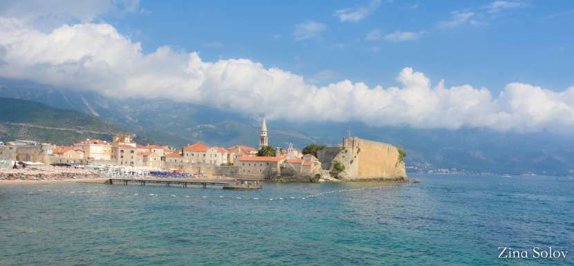
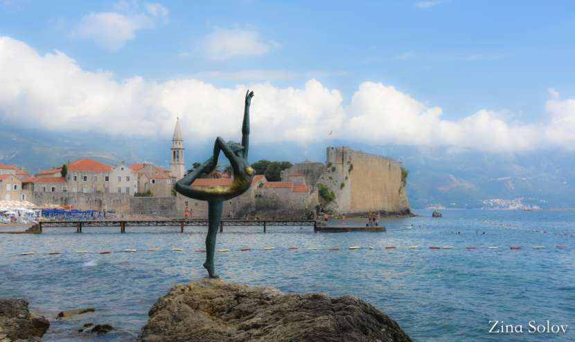
חוף מורגן מחולק לשני חופים שביניהם מפרידה מנהרה (שאפשר בקלות שלחות דרכה- לא ניסינו אבל זה מה שאומרים), באמת מדובר בחוף יפיפה אבל מאוד הומה באנשים, לכן אנחנו עושים אחורה פנה וחוזרים לעיר העתיקה לקנח את היום עם עוגת תותים טעימה במיוחד.
כשחזרנו, החלטנו לחקור טיפה את החוף שמתחת לדירה. מדובר בחוף Rafailovići שמסתבר הינו חוף שוקק חיים עם טיילת מדהימה, מלאת מסעדות שנראות מזמינות. אנחנו כלכך מצטערים שאין לנו אפשרות לרדת לשם עם העגלה, לצערי מונטנגרו עדיין לא מספיק מפותחת לכל נושא הנגישות וחבל (עם עגלת יחיד אין כלכך בעיה, עם תאומים אין שום סיכוי להכנס למעלית שמורידה מטה, שלא לדבר על שפע המדרגות לפני). ככה שאנחנו מטיילים קצת וסופגים את האווירה כשהתאומים במנשאים.
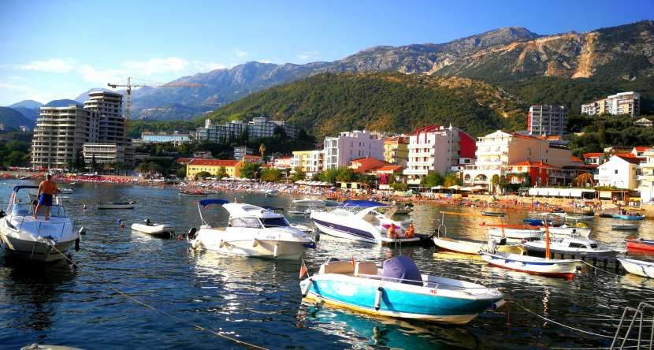
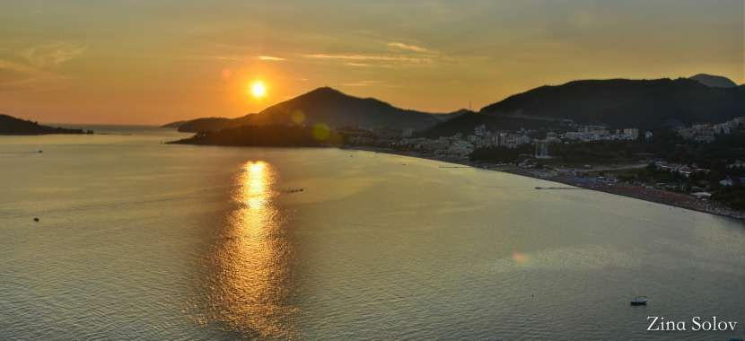
בשעה 6 וחצי אנחנו חוזרים לדירה, למקלחות, בזמן שאנחנו מאכילים את הצוציקים אנו זוכים לראות את השקיעה המדהימה מהמרפסת. וכשהילדים נרדמים בעלי יורד לטיילת להביא לנו נשנושים. אנחנו מבלים את הערב על המרפסת משקיפים על הטיילת מלמעלה ונהנים מפיצה טעימה וכוס בירה ושקט :) האמת, שזה ממש לא נורא.
יום 3, 15.9.18:
הבוקר התחיל לא כמו שתכננו. אתמול בערב מסרנו את הדרכונים לפקידת הקבלה לצורך רישום (נוהל טיפשי של המדינה שמחייבת את בתי המלון לרישום כל האורחים ולשם כך נדרש דרכון מקורי), הובטח שיוחזר עוד בערב, בפועל בבוקר עדיין לא הוחזר. אנחנו לחוצים גם בגלל הדרכן וגם כדי לצאת לדרך (למרות שדי הרגיעו אותנו, גם אבי ממנו שכרנו את הרכב, כי מדובר בנוהל של המדינה ואין חשש לגניבת הדרכונים, עדיין אנחנו טיפה לחוצים), בסוף לאחר הרבה בירורים וקצת הרמת טונים (שלי אני מודה), הבחור עם הדרכונים חזר. כל ההליך גרם לנו לעיכוב של כשעה וחצי ביציאה המתוכננת. לא נורא, הסאגה מאחורינו (נקווה שבמלונות הבאים זה יעבור חלק יותר).
היום נוסעים לבקר בהר לובצ'ן, ההר המפורסם המשמש גם כמוזוליאום של המלך נייגוש, שביקש להקבר על ההר שנהג להתבודד עליו- שם כל מונטנגרו פרושה על כף ידו. ישנן שתי דרכים להגיע לשם: אחת דרך בודווה וצ'יטניה, ושניה דרך קוטור- המכונה דרך 25 הפיתולים. בתכנון שלי היינו אמורים להגיע דרך צ'טיניה ולרדת דרך הפיתולים אל קוטור, אבל תכנונים לחוד ומציאות לחוד.
מיד כשפונים ימינה מבודווה לכיוון הכביש לצ'טניה מתחילים לטפס על ההר, ממנו נשקף נוף מדהים על הרביירה של בודווה (מבודווה מימין ודרומה).
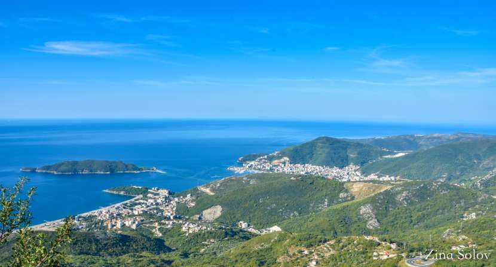
הנסיעה עד צ'טיניה די קלה ונעימה, בעיר עצמה לא עצרנו למרות שיש שם מספר מוזיאונים, לנו היא נראתה כעיירה משעממת שלא שווה עצירה. משם הכביש מוביל לכיוון הפארק הלאומי, כאן הדרך הופכת ליותר קשה ומפותלת. הילדודס מתעוררים משנת הבוקר, למזלנו בדיוק הגענו למתחם נחמד ביער, שם יש מעדה יפה, כרי דשא ושלט שמצביע לפארק משחקים לילדים.
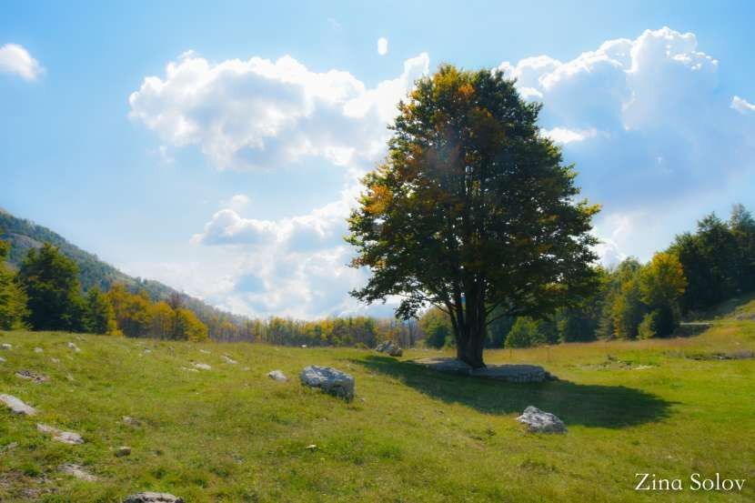
אנו נהנים מארוחת בוקר טעימה, בחיק הטבע, גם כאן עטו עלינו דבורים סקרניות (ממליצה לקחת כילה לעגלה), אחרי אתנחתא נעימה אנחנו ממשיכים בדרכנו לשמורה. הדרך מאוד יפה, במיוחד כשמתחילים לטפס והפסגות הערומות מעצים נחשפות. הכניסה לשמורה עולה 3 יורו, עוד נסיעה קצרצרה ואנחנו על כמעט על הפסגה. במקום אין כלכך חניה, כולם מצטופפים לצידי הכביש ככה שלא ממליצה לנסוע עד למעלה כי פשוט קשה להסתובב שם עם הרכב כדי לחזור, עדיף ללכת קצת ברגל- הנוף שווה את זה.
המוזוליאום בנוי כבלוק לבן על הפסגה, אליה מובילות 461 מדרגות, מצוידים במנשאים יצאנו לכבוש את הפסגה.
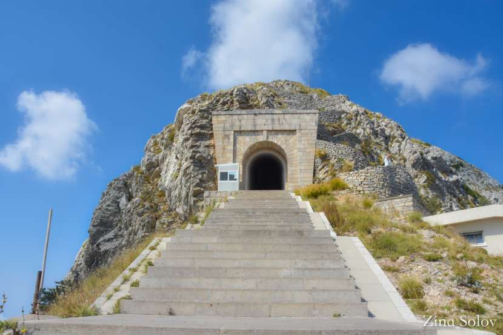
הנוף מלמעלה שווה כל התנשפות בדרך! אנחנו עומדים בגובה של 1657 מ' מעל פני הים, מונטנגרו פרושה על כף ידנו, בדיוק כמו המלך נייגוש, זה השלב שהבחור הקטן החליט שלא מתאים לו כובע על הראש וזה מאוד כיף לזרוק אותו לראות מה קורה כשהוא עף ברוח, לכובע אגב שלום.
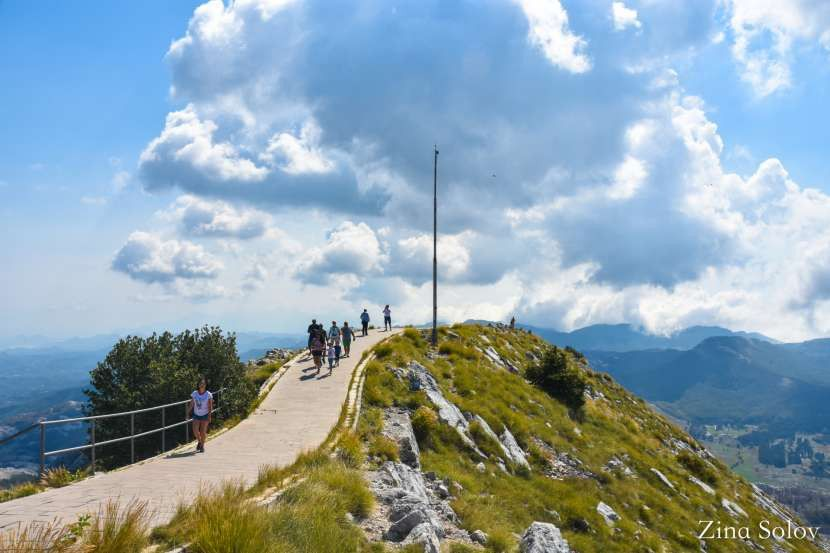
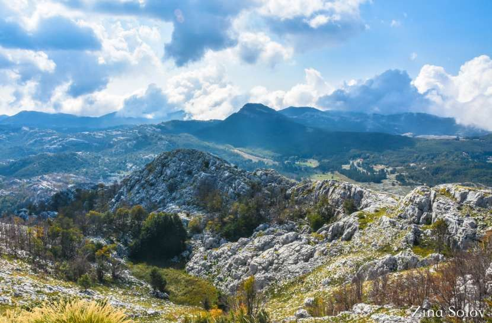
השעה כבר שתיים, והחלטנו לוותר על כביש הפיתולים, החלטנו לחזור ולשוטט בטיילת שמתחת לדירה או לנסוע לבודווה. אבל הצוציקים צריכים לאכול, אז עצרנו ליד המסעדה בה אכלנו ארוחת בוקר, הצוציקים זכו לפרוק אנרגיות ולזחול על הדשא. בדרך חזרה מצ'טיניה תפס אותנו הגשם הראשון והיחיד בטיול. מורעבים, החלטנו לנסוע ולאכול במסעדת פורטו בבודווה, עליה המליצו רבות. המסעדה נמצאת על הטיילת של בודווה, אווירה נחמדה ואוכל לא רע. עישנו טיול קצר על הטיילת של בודווה המלאה במסעדות ודוכנים (קצת כמו אילת), וכאילו לבקשתנו נגלתה לפתע קשת מרהיבה.
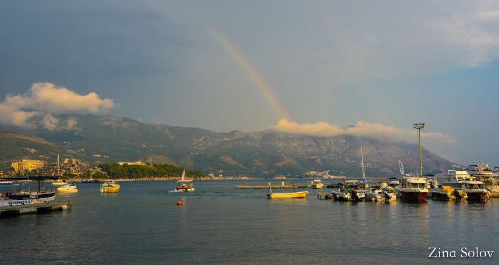
עייפים ומרוצים חזרנו למלון, זה הזמן של הצוציקים לישון! שוב זכינו לשקיעה מרהיבה מהמרפסת, רק הפעם אנחנו רואים במה מוקמת והחוף שוקק פעילות, מסתבר שיש פסטיבל הערב.
כשהילדים נרדמו הגיע תורי לשוטט לבד בטיילת ולתור אחרי אוכל ונשנושים, למזלי הייתה לי עבודה קלילה, החוף שקק חיים, מאות תיירים גדשו את המסעדות שחילקו מטעמים ויין חינם (הצטערתי שלא הבאתי תיק), חטפתי כמה נשנושים וקניתי לנו גלידה וכדי שלא תימס פילסתי את דרכי מהר מהר חזרה לדירה.
לילה רועש חיכה לנו, מאוד רועש... באמצע הלילה התעוררנו מקולות פיצוץ ממש מתחת לחלון, רק כדי לגלות שיש זיקוקים (היינו ממש בעמדת תצפית נהדרת), והילדודס? ישנו כל הלילה ולא הנידו עפעף.
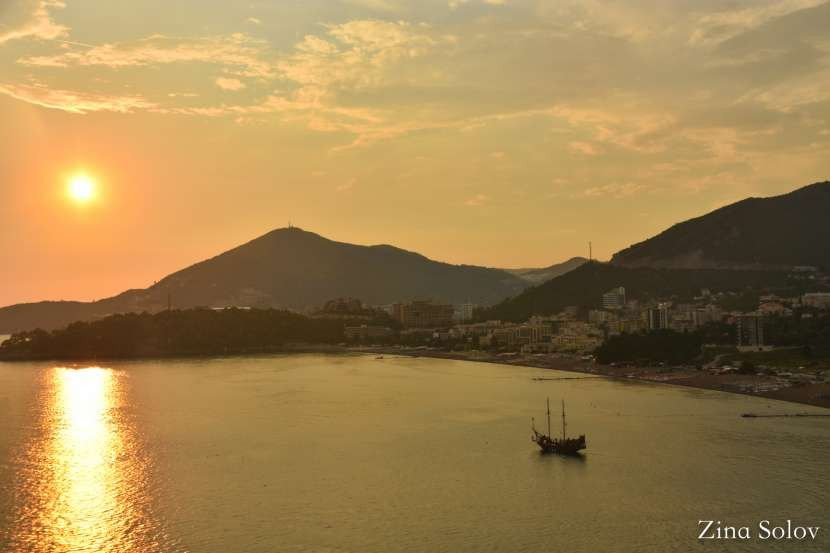
יום 4, 16.9.18:
היום נוסעים לטייל בקוטור, העיר המפורסמת של מונטנגרו. אחרי התארגנות בוקר טיפוסית אנחנו יוצאים לדרך. הנסיעה לוקחת אותנו חזרה לכיוון טיבאת ושדה התעופה, אנחנו קונים נשנושים בסופר שהצטיידנו בו ביום הראשון (VOLI), הצוציקים בינתיים ישנים את שנת הבוקר באוטו. קצת אחרי שאנחנו פונים לכיוון קוטור אנחנו נכנסים למנהרה של כמה קילומטרים וכשמגיחים ממנה אנחנו בצד של מפרץ קוטור.
אנחנו מחליטים להשאיר את קוטור לסוף ולהתחיל דווקא מהעיירה פראסט עליה קראתי רבות. נסיעה קצרה סביב המפרץ המדהים מביאה אותנו לפראסט. העיירה הוכרזה כאתר שימור מורשת ודי ברור לנו למה- היא מדהימה!
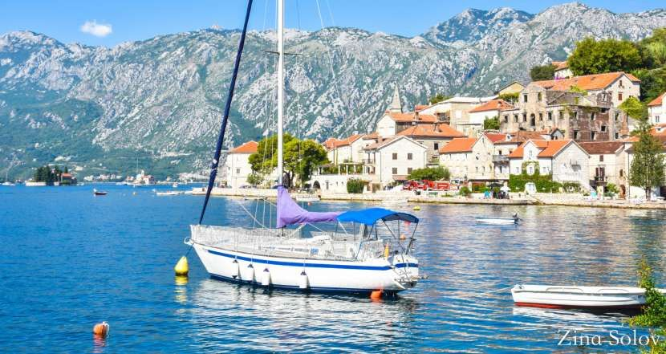
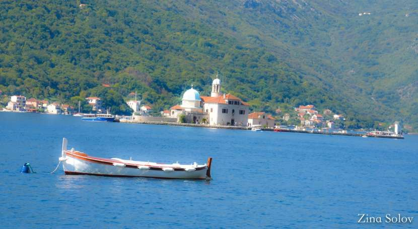
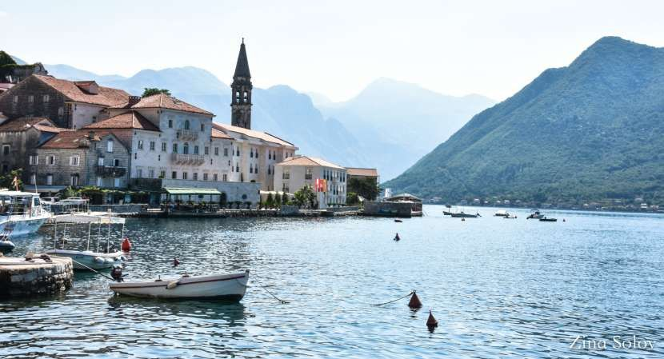
היום הוא יום ראשון ובכל מקום יש אווירה רגועה ונינוחה של חופש. אנחנו חונים בכניסה לעיירה, בתשלום של 3 יורו ומתחילים לצעוד למרכז. הכביש עובר ליד החוף (אין באמת חוף אלא טראסות בטון מהם יורדים למים) והמים, כלכך צלולים ומזמינים! אנחנו כבר החלטנו שכשנחזור מהסיור בעיירה נחליף לבגדי ים. לאט לאט עם הכביש העיירה נחשפת, מעט סירות קטנות שטות במפרץ, שני האיים- גבירתנו של הסלעים (אליו ניתן להגיע בשייט קצר) וסווטי ג'ורג' (המהווה מנזר וסגור למבקרים), העיירה ציורית ומדהימה ומלאה במסעדות נחמדות שניתן לשתות בהן קפה ולהינות מהשלווה. אולם על כל הפסטורליה הזו מעיב ריח ביוב נוראי! לא משנה לאן הולכים הריח פשוט מלווה אותנו.
חצינו את העיירה, החלטנו לא לשוט לאי כי אין כלכך מה לעשות שם, אז החלטנו גם אנחנו לשבת ולהינות מכוס קפה ומהרוגע. הזמנו לנו גלידה, הצוציקים שמחו לחלוק אותה איתנו, אבל ריח הביוב פשוט הרס כל יכולת להינות מהאוכל או האווירה, מיואשים שאלנו את המלצר מדוע יש ריח כזה, התשובה הדהימה אותנו- מזרימים ביוב לים, כמעט בכל המפרץ של קוטור! בזה הרגע הרעיון של לשחות במים הצלולים המדהימים (וכנראה המזוהמים) האלה נגנז מיד.
כשהתרחקנו קצת מהעיירה וריח הביוב, התיישבנו בפינה מוצלת מול הים ופשוט נהננו מהרוגע והאוויר הנקי (יחסית), הצוציקים בינתיים זללו להם גרבר פירות.
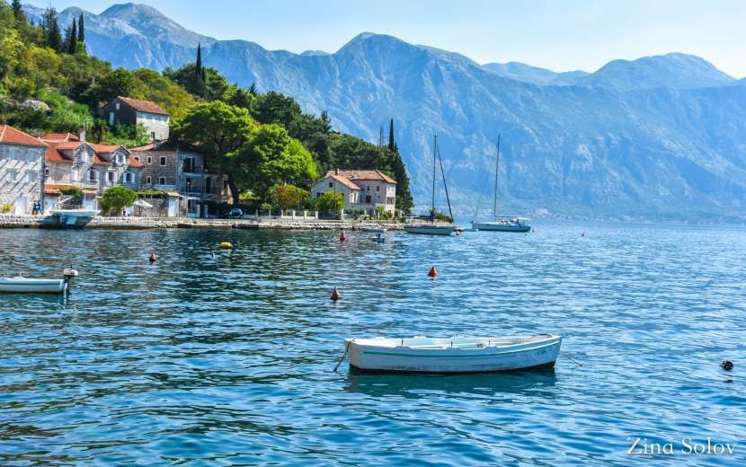
מפראסט חזרנו לכיוון קוטור, האמת בדרך הקצרצרה יש הרבה עיירות קטנות ששוות עצירה, אולם עם התאומים אנחנו מעדיפים שלא להכניס ולהוציא כל שנייה מהאוטו אז המשכנו ישירות לקוטור. כשהגענו היה תור מטורף לחניה המרכזית שמול הכניסה לעיר העתיקה, אז חנינו בחניון טיפה יותר מרוחק (כולה לחצות ברגל את התעלה של העיר העתיקה- 5 דקות הליכה).
קוטור הינו ישוב עוד מהתקופה הרומית שעבר הרבה גלגולים של שליטים, הוונציאנים הם שבנו את החומה המפורסמת של העיר שזיכתה אותה בתואר "אתר מורשת עולמית" והיא אכן מרשימה מאוד.
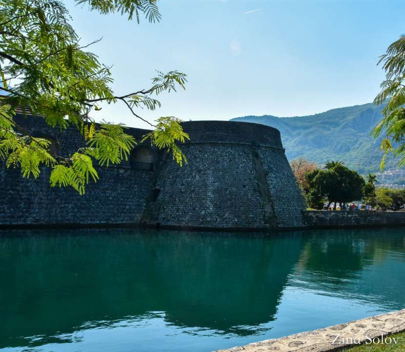
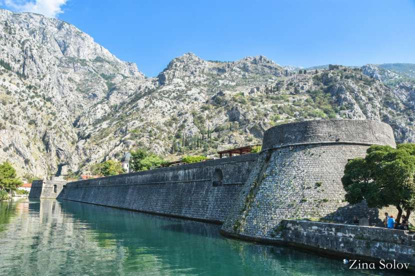
נכנסנו בשער הראשי לעיר העתיקה, מבוך של סמטאות קטנות וכיכרות, די נחמד לטייל שם במיוחד בחום המטורף שיש היום, מיד כשיוצאים מהצל של הסמטה פשוט מתאדים מרוב חום. הגיע זמן צהריים והתיישבנו במסעדה שמשקיפה על הכנסייה, הזמנו מרק טעים לצוציקים שאכלו בתיאבון רב, אני הזמנתי לי מרגריטה (אין כמו משהו רק בחום הזה), אבל הברמן כנראה לא כלכך יודע מה זה מרגריטה, כי המשקה שקיבלתי היה פשוט מזעזע! לזכותו יאמר שהוא ניסה בכל מאודו לשפר את המשקה (לפחות 3 פעמים), בסוף כבר לא היה נעים לי להגיד שזה עדיין מגעיל, אז פשוט שתיתי קצת וחייכתי כאילו זה כלכך טעים... כמובן שגם כאן עדר דבורים הגיע לארח לנו חברה (מזל שיש כילה לצוציקים).
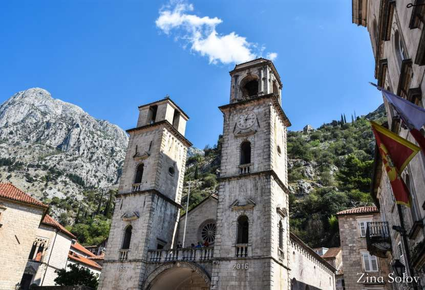
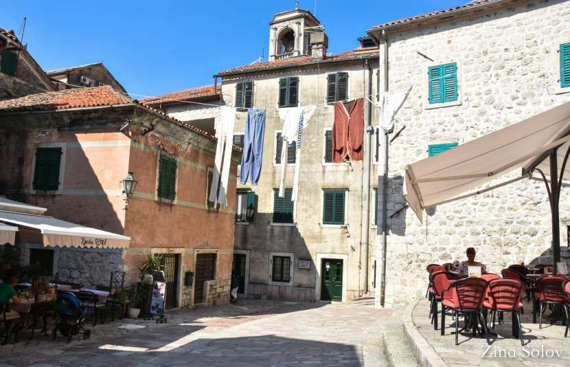
שבעים ומרוצים טיילנו קצת בעיירה, עלינו על החומות (אני עליתי, זה לא כלכך עביר לעגלה). מי שרוצה יכול תמורת 8 יורו לעלות עד למבצר מעלה על החומר (עליה לא קלה, אבל הנוף משם שפוט משגע ממה שראיתי בתמונות), אבל בחום ששורר היום, אין סיכוי שנטפס עם 9 קילו תינוק כל אחד מאיתנו עד הפסגה, כשהצוציקים יוכלו ללכת בעצמם נחזור ונסמן V גם על זה :).
בדרכנו חזרה החלטנו לעשות קצת מהדרך היפה (25 הפיתולים) שלא עשינו אתמול, הגענו עד הפיתול הראשון, התרשמנו מהנוף היפה אבל די מהר החלטנו פשוט לחזור לדירה, היינו עייפים מכדי לנסוע לראות נוף (יפה ככל שיהיה).
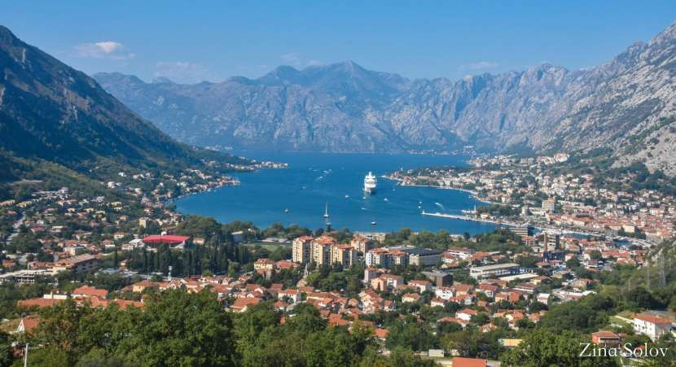
כשהגענו לדירה החלטנו לבדוק את החוף שמתחת, עד עכשיו טיילנו קצת בטיילת, אבל למה שלא נשחה קצת? השעה ארבע וחצי, השמש מעריבה, לקחנו את הצוציקים במנשא למטה, פרשנו מחצלת על החוף (בין המוני תיירים רוסים ששהו במקום), בעלי שחה קצת ולקח את הילדודס לטבילה קלה (הבן ממש אוהב, הבת עקמה פרצוף), ואני ביליתי לי על המחצלת בזמן שהצוציקים שיחקו עם החול.
אחרי ששמנו את הילדים לישון (כמובן שראינו עוד שקיעה מדהימה מהמרפסת) וארגנו הכל למחר, התיישבנו כרגיל עם כוס בירה ופיצה במרפסת, איזה סיום מושלם לשהות שלנו בדרום! מחר עוזבים צפונה.
יום 5, 17.9.18:
היום מצפה לנו יום קשה, אנחנו מדלגים צפונה- מבודווה לז'בליאק (העיר המרכזית בפארק הלאומי דורמיטור). קמנו מוקדם (הצוציקים ישנו ממש טוב ככה ששנינו עירניים), האכלנו את הקטנים, העמסנו את הרכב, עשינו צ'ק אאוט ויצאנו לדרך במטרה לגמוע מרחק רב כל עוד הצוציקים ישנים.
אפשר כמובן לנסוע בדרך הנופית- לכיוון טיבאת, לחצות את מפרץ קוטור במעבורת משם לעלות לפלוז'ין ומשם לז'אבליאק- דרך קשה ומאתגרת אבל מדהימה ביופייה, אולם בלתי אפשרית בעליל לנוסעים עם תינוקות, אין סיכוי שהם יבלו יום שלם ברכב. לכן החלטנו לנסוע בדרך הקצרה ביותר שהוויז המליץ- דרך צ'טיניה- פודגוריצה- ניקשיץ'. כמובן שתכננתי לנו כמה עצירות למקרה והם יתעוררו ונצטרך להוציא אותם לפרוק אנרגיות.
אז יצאנו בדרך לכיוון צ'טיניה (שאנחנו כבר מכירים מנסיעתנו ללובצ'ן), כביש מהיר ורחב בו התנועה זורמת. מספר קילומטרים אחרי צ'טיניה אפשר לסטות לכביש שמוביל לרייקה צ'רנוביקה (הבירה ההיסטורית של מונטנגרו) ומשם לתצפית פבלובה (על עיקול נהר הרייקה צ'רנוביקה). הילדים ישנים ולכן החלטנו לנסוע לכיוון התצפית- אולם כאשר ראינו את הכביש המאוד צר המוביל לשם, הבנו שמדובר בעיקוף שייקח לנו המון זמן, אז ויתרנו, כל עוד הם ישנים כדאי לנסוע. סמוך לפודגוריצה (הבירה) עצרנו בקיוסק לקנות לנו נשנושים (כי לא אכלו ארוחת בוקר). האמת הגענו ממש מהר לפודגוריצה (שעה וקצת). ממשיכים מכאן לכיוון העיר ניקשיץ' ואני רואה במפה שיש שני אגמים לידה, נשמע טוב, אגם משמעו דשא ומקום לאוורר את הילדים אז אנחנו נוסעים לשם.
מי שמעוניין יכול לעצור בדרך במנזר אוסטרוג (מנזר חצוב בסלע) עם נוף יפיפה שנשקף ממנו, אנחנו לא עצרנו והמשכנו הלאה. ממש בפאתי ניקשיץ' (כחצי שעה נסיעה מפודגוריצה) הצוציקים מתעוררים, אנו שמים פעמינו לאגם, אנחנו מגיעים ו... איזה דשא ואיזה נעליים! הגענו לאגם סלאנו, אגם מלאכותי המשמש יותר לדייג ולא לרביצה עם תינוקות כי כדי לרדת לגדה צריך לרדת ברמפה (או לעשות עיקוף של האגם ולא שבגדה הנגדית יש דשא). האגם אמנם ממש יפה ככה שאנחנו מצטלמים קצת וחוזרים לרכב. בדיעבד היינו צריכים לנסוע לאגם השני, אגם Krupac שם לפחות נראה שיש חוף רחצה…
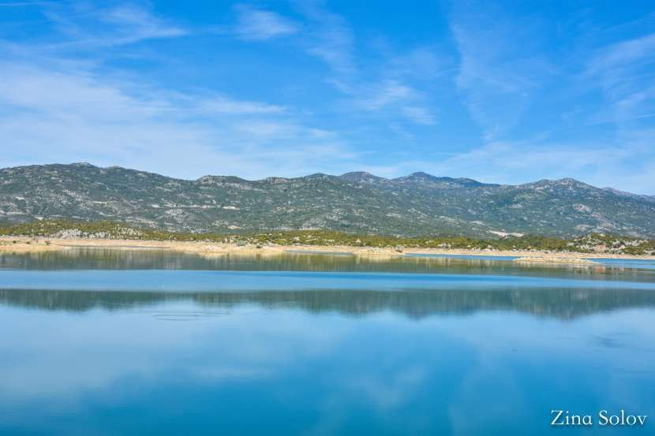
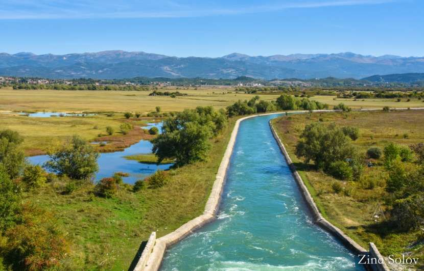
פתאום אני נזכרת שראיתי שלט בכניסה לניקשיץ' שמראה על איזשהו יער Trebjesa, יער גם נשמע כמקום נחמד שאפשר לשחרר את הילדים לפרוק אנרגיות ככה שאנחנו מיד מכוונים את הוייז ונוסעים לראות את המקום. היער נמצא בפאתי העיר (אגב ניקשיץ' היא בעיקר עיר בה מרוכזת התעשייה ככה שאין כלכך מה לעשות שם מבחינת תיירות, אלא אם אתם כמונו ועוצרים שם בדרך לז'בליאק) נסיעה קצרה ואנחנו שם. מדובר במלון שנמצא על פסגת ההר, יש הרבה מסלולי הליכה ביער אבל מבחינתנו יש דשא, פארק לילדים ומסעדה!!! אנחנו מיד פורשים מחלצת, הקטנים כבר בעננים, הבן מיד זוחל מחוץ למחצלת וטועם את כל העשבים שיש, הבת לעומת זאת, פרינססה, לא רוצה לצאת את גבולות המחצלת.
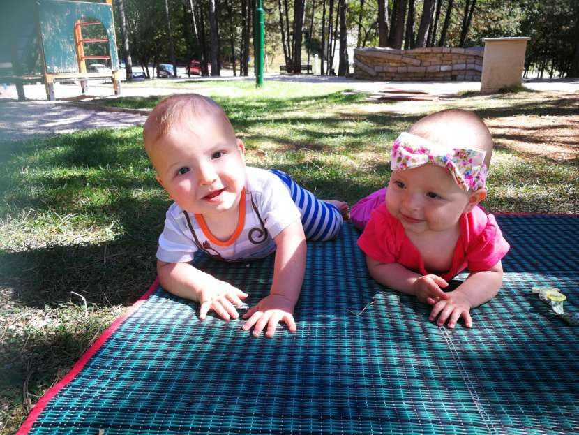
אני קונה לנו קפה ועוגת גבינה (שגם אותה הצוציקים שמחו לחלוק איתנו) וככה אנחנו מעבירים שעה וחצי בכיף, הילדים נהנים וזוחלים, אנחנו לידם על המחצלת, נושמים אויר צלול ונקי של יער פשוט תענוג! השעה כבר 12 וחצי, זמן צהריים הגיע, ובהמלצת אבי (ממנו השכרנו את הרכב) אנחנו נוסעים למסעדה חמודה שנקראת pekara, ההמבורגר שלהם פשוט מעולה! הילדודס קיבלו חביתה (פחות זרמו, אז תמיד ניתן להשלים עם בקבוק). תכנון הזמנים יצא מצוין, כי בדיוק הגיע זמן שנת הצהריים של הקטנים ומבחינתנו אחלה זמן לנצל לדילוג האחרון לז'בליאק. יצאנו לדרך, קטע נסיעה זה הופך להיות הרבה יותר יפה, אך גם יותר קשה לנהיגה. אנחנו מטפסים גבוה להרים, הנופים מהממים, אבל סמוך לעיירה שאבניק (Savnik) מתחילים פיתולים ככה שנסיעה לכאורה קצרה הופכת לארוכה וקשה (לא עוברים את ה-40 קמ"ש) אבל הכביש עובר ביערות ושדות ככה שזה פיצוי נאה.
לז'בליאק הגענו בשעה ארבע (הצוציקים בדיוק התעוררו), אנחנו מתאחסנים ב- O'ro Apartments מסתבר שגם לבעלי הדירה יש תאומות! אנחנו נכנסים לדירה מקסימה חמימה וביתית, גם כאן יש 2 מיטות תינוק מוכנות, חדר השינה פשוט חמים ונעים, ממש אווירה של בית (החיסרון היחידה שזה קומה 3, הזוג עצמו גר בקומה הראשונה) התאומים כבר קלטו את ערימת המגזינים והסתערו לפרק אותה.
היום כבר לא נספיק הרבה, אז החלטנו לתור את העיירה, ולאכול במסעדת Oro המפורסמת. מלבישים את הילדים חם ולוקחים ג'קטים כי בצפון כבר די קריר בערב (כבר מדליקים חימום בבתים). עם צאתנו לרחוב אנו קולטים עדר פרות מטייל לו בנחת ואוכל מפחי האשפה הפזורים ברחוב...הילדים לא כלכך התלהבו מהפרות. המשכנו לכיוון המסעדה שנמצאת במרכז העיר מול הסופר VOLI ומרכז מידע לתייר, הצטיידנו במצרכים לימים הקרובים ונכנסנו לאכול ארוחת ערב.
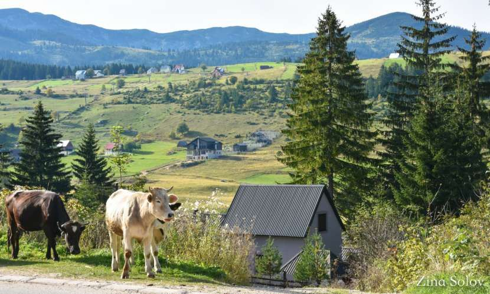
המסעדה ממש נעימה חמימה וביתית, הזמנו מרקים לנו ולילדים, האוכל פשוט מעולה! ולהפתעתנו המלצר אומר שיש לנו משקה על חשבן הבית כי אנחנו האורחים של בעל המסעדה, רק אז נופל לנו האסימון שאנחנו מתאכסנים ב- O'ro Apartments והמסעדה נקראת ORO...שבעים ומרוצים חזרנו לדירתנו החמודה ולהשכיב את הילדודס לישון. מאוד חששנו מהיום הזה בגלל הנסיעה הארוכה אבל עם תכנון זמנים טוב היום הוגדר כהצלחה!
יום 6, 18.9.18:
הילדודס החליטו לעשות לנו השקמה ב4 לפנות בוקר, איזה כיף... אז אחרי שבמשך שעתיים בהם התפללנו לאלוהי התיירים שהם יחזרו לישון, ללא הצלחה, התחלנו את הבוקר ב-6!. האכלנו את הילדודס והחלטנו שעדיף שאנחנו נאכל בחוץ כי אולי הם ישנו בעגלה, התוכנית היא ללכת ברגל לאגם השחור (2 ק"מ הליכה לפי הוייז). יצאנו מהדירה הנעימה שלנו לבוקר קריר (מזל שהתלבשנו חם), ירדנו שוב למרכז העיר כדי לקנות לנו איזה קפה ומאפה טרי במאפייה (לא משהו בכלל), משם קפצנו למרכז מידע לתייר כדי לברר מה ניתן לעשות בסביבה שמתאים לתינוקות (רציתי לעלות על הרכבל, אבל הוא פתוח לגמרי אז פחות מתאים, גם מסלול ההליכה curvac לא מתאים עם תינוקות)- המליצו לנו ללכת גם לאגם השטן (vrazje jezero), אולי אפילו נספיק היום, אבל קודם לאגם השחור!
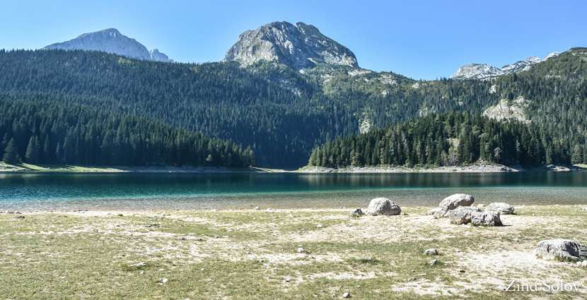
האגם השחור (Crno Jezero) הוא ה-אטקציה של שמורת דורמיטור (בה ממוקמת העיירה ז'בליאק), מדובר באחד מ-18 אגמים קרחוניים הנמצאים בפארק הלאומי. האגם נמצא בגובה 1,416 מטר וניזון מנחלים רבים הזורמים אליו ומהפשרת שלגים מפסגות הרי הדורמיטור. הוא מוקף ביערות עצי מחט המטילים בחלק מהיממה צל אפל על האגם ומכאן שמו. מדובר למעשה בשני אגמים המחוברים בתעלת מים צרה המתייבשת בקיץ: האגם הגדול (Veliko jezero) בשטח של 0.338 ק"מ ובעומק 24.5 מטר והאגם הקטן (Malo jezero) בשטח 0.177 ק"מ ובעומק 49.1 מטר.
ממרכז העיירה אנחנו צועדים לכיוון השני (לכיוון מלון SOA), אנחנו זוכים לבוקר נפלא, אוויר קריר אבל לא קפוא ככה שממש נעים לנו ללכת, הצוציקים העטופים במעילי פליז ושמיכה נרדמו מיד.
הגענו לפאתי יער אורנים, אי אפשר להעביר במילים את ריח האורנים באוויר הבוקר הצלול... לפנינו שביל שנכנס ליער אז החלטנו שזה שביל הגישה לפארק, אנחנו צועדים בתוך היער מסביבנו עצים חטובים ופטריות ואז הגענו לבודקה של הכניסה לשמורת הטבע, משם המסלול נראה לנו קצת אתגרי לעגלה, אנחנו שואלים את הבחור בכניסה שאומר שהמסלול עביר (לא נראה שהבין משהו בכלל), אם כך משלמים 3 יורו (עלות הכניסה לשמורה) ונכנסים... מצאנו את עצמנו ביער מדהים אבל שביל צר שאינו עביר בעליל לשום עגלה. כאן קצת נדהמנו, בכל מקום קראתי שהאגם נגיש לגמרי, שיש בדרך אליו דוכנים עם פירות יער ודבש... פה אין דוכנים ולא כלום... עשינו אחורה פנה, למזלנו הגיע עוד בחור שהראה לנו שיש דרך מסביב (או יותר נכון ניסה להגיד לנו שאנחנו פשוט צריכים להמשיך עם הכביש וכבר נגיע לאגם). אז חזרנו לכביש ואכן אחרי הליכה של 7 דקות הגענו לבודקה נוספת (לא שילמנו שוב את דמי הכניסה) והינה סוף סוף הדוכנים להם חיכיתי!!! שפע של פירות יער, ריבות, פטריות מיובשות! גן עדן! מיד הצטיידנו בקופסא של פטל וריבה ונכנסנו לתחומי הפארק.
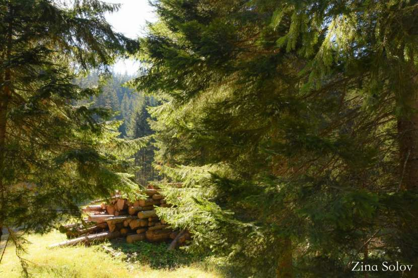
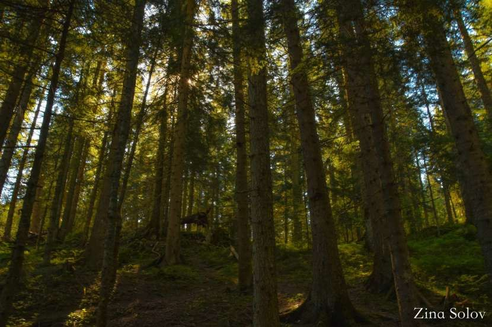
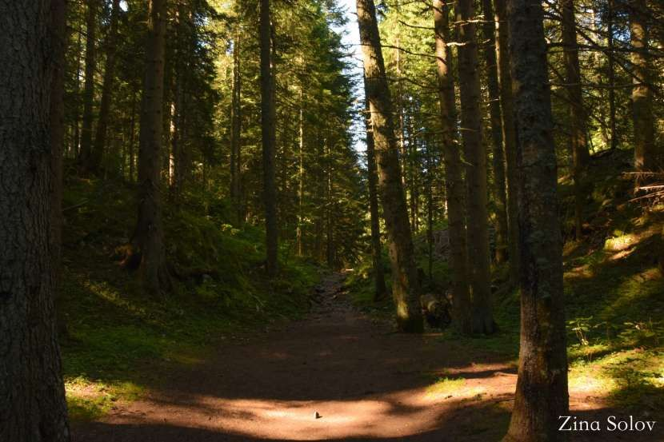
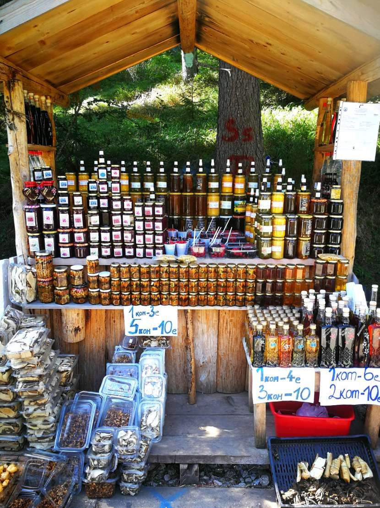
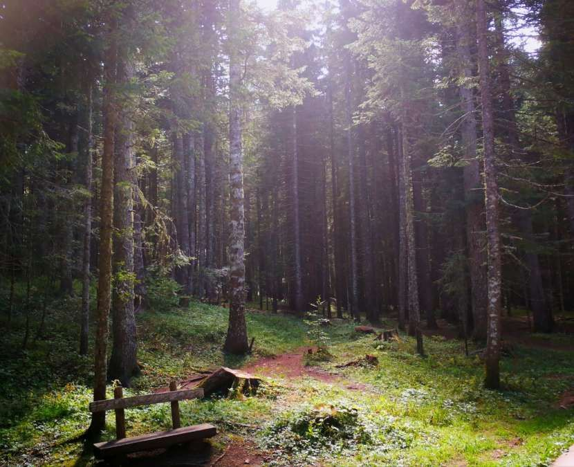
הליכה קצרצרה של 700 מטר מובילה אותנו אל האגם, מה אני אגיד, הוא מהמם! אמנם הוא הומה אדם בשעה הזו (כבר 10 וחצי בבוקר, קצת התברברנו מידי בהליכה וארוחת הבוקר), ככה שמי שיכול כדאי להגיע ממש מוקדם.
סביב האגם יש שפע ספסלים הממוקמים בצל, אבל בחוץ שמש, אז החלטנו לפרוס את המחצלת קרוב למים. הצוציקים בעננים! אחרי שחרפו להם כמעט 3 שעות הם כלכך מבסוטים לזחול על הדשא, לכרסם פטל ולצפות בברווזים ששטים באגם. ככה מצאנו את עצמנו מעבירים שעתיים בכיף, חזינו איך צבע המים משתנה משחור לאמרלד ברגע שהשמש מציצה, אכלנו פטל, בילינו קצת בצל בין העצים המרשימים רק חבל שקרקורי הבטן הזכירו לנו שאנחנו רעבים!
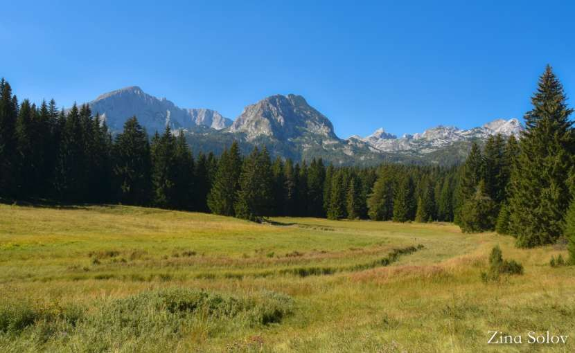
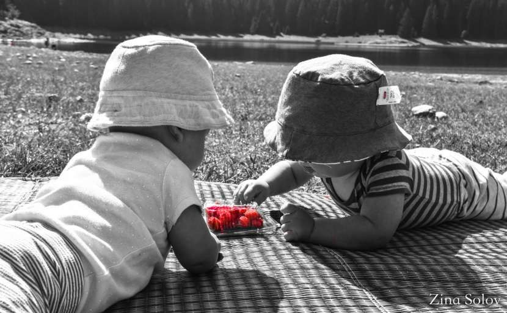
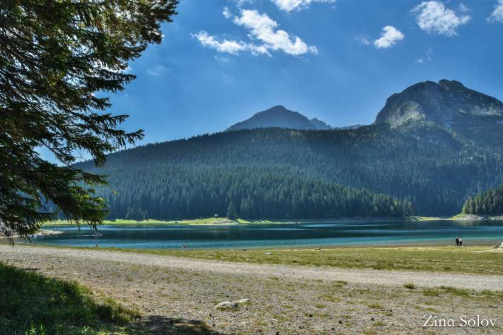
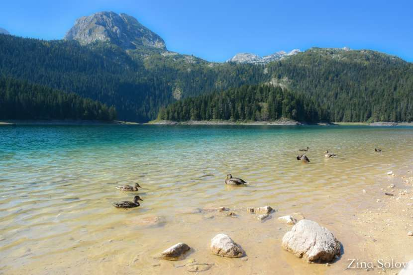
החלטנו לאכול צהריים במסעדת SOA שמענו עליה ביקורות טובות והיא גם ממש בדרך, הגענו לשם וגילינו שאין שום נגישות עם העגלה (צריך לעשות סיבוב ענקי כדי להגיע למסעדה בדרך נגישה) לכן כאקט מחאה פרטי החלטנו לחפש מקום אחר. שום מסעדה לא שווה בעינו לסחוב עגלה של 9 קילו+ תינוקות במורד גרם מדרגות!
עם המזל שלנו היום יש הפסקת חשמל בכל העיירה, ככה שכל מקום אליו מגיעים שומעים את טרטור הגנרטור. בסוף מצאנו מקום חביב שנקרא התוכי הזהוב- Zlatni papagai, הזמנו פטריות עם חמאה, מקרים (מגוון עצום- יחסית למונטנגרו) ובשר לבעלי (איך לא), את המרק לילדים אפילו טחנו בבלנדר! שבעים ומרוצים החלטנו לחזור לדירה כדי לאפשר לילדים לישון שנ"צ ואולי אחרכך ניסע לאגם השטן...
הצוציקים לא כלכך שיתפו פעולה, עד שנרדמו וקמו כבר היה 4 אחר הצהריים, לכן לא היה שווה לנו כבר לנסוע לאגם, אז החלטנו לשוטט קצת בעיירה. אחרי 10 דקות שדי עברנו את רוב העיירה והתפעלנו מנוף הרי הדורמיטור (טוב הגזמתי, 20 דקות), נכנסנו שוב למסעדת ORO לקפה ועוגה. גשם התחיל לטפטף אז חזרנו לחדר בדיוק בזמן למקלחות ולישון. עוד יום מוצלח הגיע לקיצו.
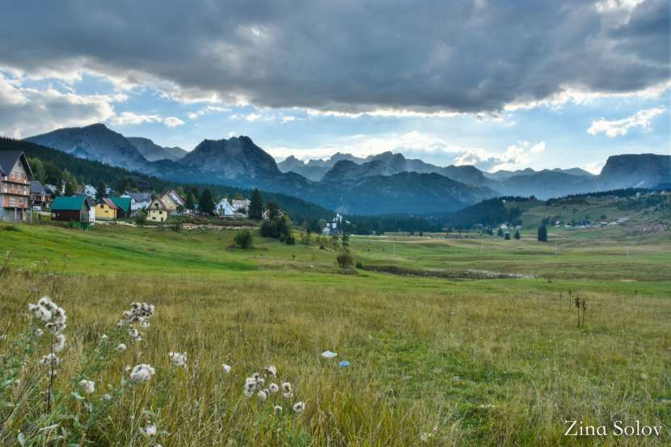
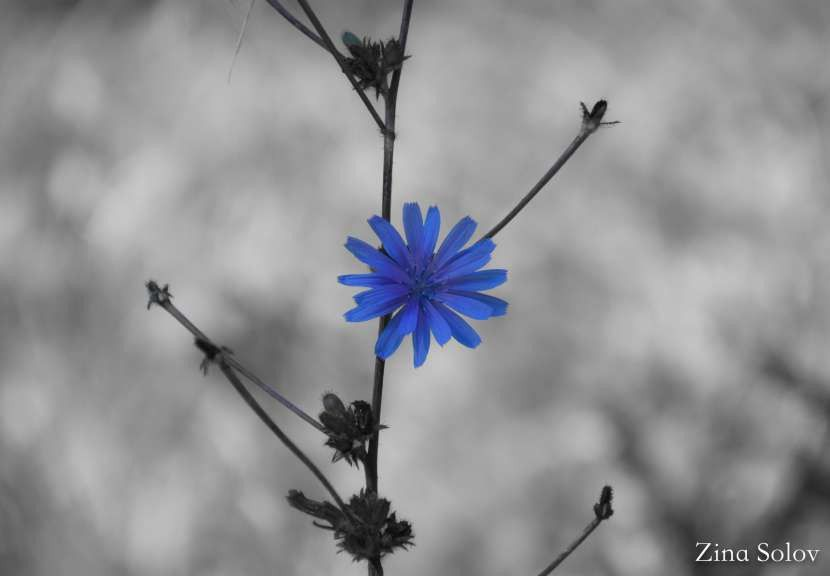
יום 7, 19.9.18:
היום החלטנו לנסות לנסוע לכיוון העיירה פלוז'ין ואגם פיבה דרך הכביש שחוצה את שמורת הדורמיטור- כביש P14. קראתי שהכביש מהמם, אבל לא פשוט לנסיעה, לכן החלטנו פשוט לזרום, לנסוע ונראה לאן נגיע.
אחרי ארוחת הבוקר יצאנו לדרך, יוצאים מז'בליאק ונוסעים לכיוון הרכבל (ski center) פונים ימינה ונכנסים לאיזור ההרים. מהר מאוד הדרך הופכת להיות צרה ומפותלת (עד לפני כמה שנים היא אפילו לא היתה סלולה)... הצוציקים נרדמו מיד ולנו יש את כל הזמן שבעולם לבהות בנופים המהממים!
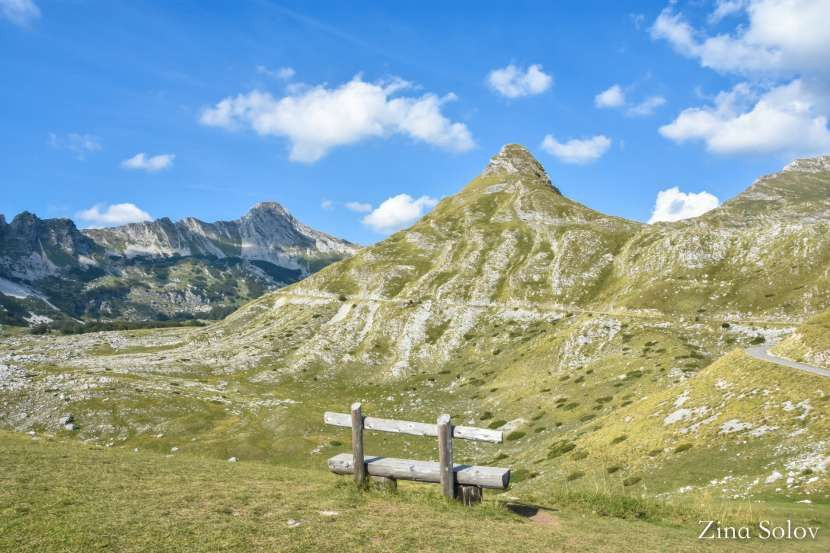
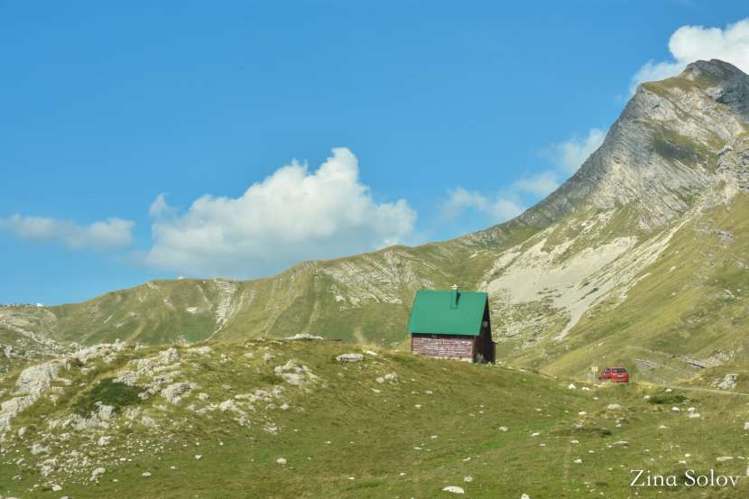
נקודת העצירה הראשונה היא ההר סדלו (sedlo) שפירשו אוכף. ההר נראה ממש כמו אוכף, והנוף עוצר נשימה! עצרנו לכמה צילומים, בעוד אנחנו מצלמים אנו רואים שני גורי כלבים מתוקים חורפים להם בנחת מתחת לספסל, באותו הרגע גם מר בחור הקטן התעורר וזכה לקצת צילומים על הרקע משגע (אחותו המשיכה לחרופ לה ברכב).
וככה נסענו בכביש מפותל ויפיפה, נהנים מהאוויר הצלול והנוף המשגע. ראינו שהדרך נמשכת המון זמן, אז החלטנו להגיע עד הכפר האקולוגי מילוצ'ר לטייל שם ולחזור (אנחנו גם ממש רעבים, אין שום קיוסק או מסעדה בדרך, או אות ציביליזציה).
אחרי שעה וחצי של נסיעה הגענו לכפר- או יותר נכון 3 בתים וקמפינג אקולוגי... יש מסעדונת קטנה בקמפינג וזהו, אה בעצם שכחתי את הפרות, יש כמה עשרות פרות רועות בכפר. אנחנו באמצע הדרך לפלוז'ין, לא ממש רצינו להמשיך כי 6 שעות נסיעה ביום זה לא ריאלי עם הצוציקים... קנינו סנדוויצ'ים ועשינו אחורה פנה, העדפנו לבלות עם הצוציקים על הדשא מאשר לטרטר אותם ברכב.
חזרנו מהר לכיוון הר הסדלו (הדרך חזרה עברה משמעותית מהר יותר), מצאנו לנו כר דשא עם נוף משגע רק אז הערנו את הילדודס (שחרפו שעתיים וחצי בכיף). בזמן שהצוציקים נהנו מהאוויר והדשא טעמנו את הסנדוויצ'ים שקנינו, מה אני אגיד, כבר עדיף שהיו נותנים כל מרכיב בנפרד היה יוצא יותר טעים.. (לחם עם חתיכות גבינה שנופלות עם כל ביס ועגבנייה ארוזה בשקית של הסנדוויץ')- גורמה!
מתחיל להתקדר, אז החלטנו לצאת מאיזור ההרים ולנסות את מזלנו באגם השטן (vrazje jezero) שהמליצו לנו עליו אתמול.
חזרנו לכביש לכיוון ז'בליאק ופנינו ימינה (לכיוון מסעדה בשם izvor ומשם ממשיכים עם הכביש). אחרי נסיעה של 5 דקות הגענו לאיזור האגמים של אגם השטן ואגם הדגים, 2 שלוליות גדולות אבל מוקפות שפע דשא, אחלה מקום לפרוש מחצלת ולתת לצוציקים לזחול.
התמקמנו באגם השטן המהמם! אמנם מדובר באגם קטן מאוד (ולכן קראתי לו שלולית) אבל מוקף בטבע משגע- כרי דשא ירוקים, גבעות כמו מארץ ההוביטים של טולקין, אבל גולת הכותרת היא מי האגם- אם מסתכלים מלמעלה נראה כאילו לאגם יש עין (כתם כחול כהה יותר) שנראה כמו פתח לגיהנום, ומכאן שמו. אפשר להקיף את האגם, אפשר לעלות רגלית לאחת הגבעות הסמוכות ולראות את הנוף, אנחנו פשוט רבצנו על הדשא (מחצלת) וצפינו באגם, היינו לבד במקום ורק קרקורי הבטן הניסו אותנו חזרה העירה.
אכלנו שוב במסעדת התוכי הזהוב, הילדים כלכך התעייפו שאחרי האוכל פשוט נרדמו, אז עד שהם ישנו ישבנו בנעימים במסעדה. כשהם קמו עשינו עוד טיול בעיירה, הצטיידות בסופר ומשם לדירה כי התחיל לרדת גשם, מחר עוזבים ליעד הבא.
יום 8, 20.9.18:
היום אנחנו עוזבים את דירתנו המקסימה בז'בליאק וממשיכים לכיוון שמורת ביוגרדסקה. כרגיל אנחנו קמים מוקדם, מתארגנים ויוצאים לדרך. השעה עדיין מוקדמת ולכן התנועה בכבישים דלילה מאוד, הצוציקים נרדמו מיד.
העצירה הראשונה שלנו הוא גשר טארה. נהר הטארה הוא הארוך ביותר במונטנגרו. אורכו 82 ק"מ ועומקו המקסימלי הוא 1300 מטר, דבר המעניק לו את התואר של הקניון העמוק ביותר באירופה והשני בעולם אחרי הגרנד קניון. גשר טארה בעצם נקרא גשר ג'ורגוויצ'ה, אורכו 365 מטר וגבהו מעל נהר טארה הוא 172 מטר. יש בו חמש קשתות שהגדולה ביותר אורכה 116 מטר. הגשר נבנה בתקופת ממלכת יוגוסלביה בשנים 1938–1940 כפי שכתוב בלוח המתכת בכניסה אליו. עם השלמתו הוא היה גשר הרכב הגדול ביותר באירופה.
אנחנו מגיעים בשבע וחצי בבוקר, הדוכנים במקום רק מתחילים להיפתח, בגלל שהצוציקים ישנים ואנחנו לא רוצים להעיר אותם אנחנו עושים סיבוב בתורות, קודם אני יוצאת לשיטוט ואחרכך הבעל. הגשר מרשים מאוד ועוד יותר מרשים הקניון, הנהר נראה כפס דקיק מעל גובה רב.
המקום מפורסם מאוד בזכות האומגה (יש 2 מפעילים), אני כלכך תכננתי לעשות את האומגה אבל בעלי פשוט עשה לי כלכך רגשי שאם יקרה לי משהו איך הוא יהיה עם 2 ילדים שפשוט נשברתי וויתרתי (הוא יצטרך לחשוב על פיצוי הולם). אז קצת מאוכזבת נכנסתי לרכב והמשכנו הלאה. אם אתם לא עושים את האומגה המקום נחמד לעצירה קצרצרה לצילום והלאה לדרך... קראתי גם על הרבה מסלולים שאפשר לעשות במקום שמובילים לתצפיות מדהימות על הקניון, אבל זה יידחה לכמה שנים.
אנחנו ממשיכים בנסיעה לאורך הקניון והנהר (חבל שבגלל הצמחייה לא כלכך רואים את הנוף) כשפתאום בעלי עוצר, מצד שמאל בשולי הכביש יושב לו בנחת שועל, ממש כמו בספרים- אדום עם זנב פרוותי, הוא כמובן זכה לכמה צילומים.
אנחנו כחצי שעה מהשמורה, החלטנו לעצור להפסקה ולהעיר את הצוציקים על הדרך, ולמזלנו אנחנו רואים מסעדה עם נוף על הנהר, איזה מקום מושלם לעצירה, אז זהו שלא כלכך. מילה באנגלית הם לא יודעים והתפריט הוא רק בשר! מי אוכל בשר בעשר בבוקר? שתינו קפה (מזוויע) והצוציקים אכלו את הפירות שלהם (הגרברים של VOLI הצילו אותנו כל הטיול). בסמוך למסעדה ממש על גדת הנהר יש כר דשא ממש מזמין, החלטנו לאוורר את הקטנים, הם כלכך נהנו לשבת על הדשא ולשחק עם הפרחים...
משם המשכנו לשמורה, היא משתרעת על שטח של 54 קמ"ר וכולל יער גדול, פסגות עד 2,000 מטרים ושישה אגמים קרחוניים כשהיפה ביניהם הוא אגם ביוגרדסקה (Biogradsko jezero), הנמצא בכניסה לפארק. הפארק משמש למטרות מחקר. יש בו עשרות סוגים של פרחים, עצים, ציפורים ובעלי חיים. בלב הפארק משתרע יער ראשוני בשטח של 16 קמ"ר ובו עצים בני מאות שנים שלא הושפעו מפעילות אדם.
מהכביש אנחנו פונים שמאלה, חוצים על הגשר את נהר טארה והופ אנחנו ליד הבודקה בכניסה לשמורה. הכניסה לפארק עולה 3 יורו, משלמים בכניסה ונכנסים, הכביש עובר בתוך יער, אנחנו מוקפים בירוק והשמש מציצה מידי פעם, מחזה מרשים! החנייה היא ממש צמוד לאגם ביוגרד, שהוא פשוט יפיפה, אבל לפני שהצלחנו להתרשם ממנו, צריך למצוא חניה. הגענו בשעה 11 וחצי כך שהמקום המה תיירים ובקושי מצאנו חנייה, ממליצה למי שיכול שיגיע מאוחר יותר (בטיול עם תינוקות לפעמים מתפשרים על השעות).
בהתחלה חשבנו שהפארק יהיה דומה לאגם השחור בשמורת הדורמיטור, שנוכל למצוא לנו כר דשא ולפרוס מחצלת ולהתבונן באגם, אגם ביוגרד שונה לגמרי. מסביבנו יש יער עד שמסתבר מדובר בעצים בני 500 שנה ומעלה! והקרקע סלעית כך שאין שום פינה למחצלת. אז אנחנו עוברים לתוכנית ב' ושולפים את המנשאים.
מיד הלכנו להתרשם מהאגם היפיפה, בעל מימי האמרלד, משם הלכנו בשביל המקיף את האגם בתקווה בכל זאת למצוא פינה לפרוס מחצלת ולתת לצוציקים לזחול, מצאנו טרסת עץ קטנה הצופה על האגם, פרשנו מחצלת והקטנים מיד התחילו לנסות ולטעום את העלים הפזורים במקום. בעלי קצת התעצל להקיף את האגם (כ-3 ק"מ הליכה) אז פשוט ניצלנו את הזמן לתצפת על האגם והיער.
גם כאן יש שפע מסלולי הליכה בדרגות שונות המובילים להרים, שיחכו לנו בפעם הבאה :).
לאחר שמיצינו החלטנו לחפש לנו מקום לאכול, ומיד כשיוצאים מהשמורה ועולים על הכביש לכיוון קולאשין יש מסעדה כפרית מדהימה! אני לא זוכרת את שמה אבל אי אפשר לפספס אותה, היא צופה על נהר טארה (שכאן כבר זורם בערוץ לא עמוק), אנחנו מזמינים לצוציקים מרק והם נרדמים לשנת צהריים, בזמן הזה אנחנו נהנים מארוחה מצוינת של דגים ומיץ אוכמניות טרי! איזה כיף! כשהצוציקים מתעוררים אנחנו ממשיכים ליעד הסופי להיום- העיירה קולאשין (החלטנו לפצל את הנסיעה חזרה דרומה ולכן קולאשין מתאימה ללינה אחרי יום פעילות בשמורת ביוגרד).
העיירה קולאשין היא עיירת סקי שבעונה זו של השנה מאוד מנומנמת. כאן החלטנו להתפנק והזמנו סוויטה במלון שרתון- Four Points by Sheraton . המלון חביב אבל אל תצפו למלון מטורף. התמקמנו בחדר חביב זרקנו את הדברים ויצאנו לחקור את העיירה. הקפנו כמעט את כל העיירה, שעל רקע השמש המעריבה נראתה ציורית מאוד, רק כדי לגלות שהמדרחוב הראשי נמצא מטר מהמלון מהצד השני...
המדרחוב מאוד חביב בכיכר הראשית יש מזרקה מקסימה שהקטנצ'יק נהנה לשכשך בה את ידיו, אחרכך טיילנו במדרחוב בו יש כמה מסעדות ופאבים נחמדים, אך האטרקציה המרכזית היא פסלי האנטים Tree Ents (כמו באגדות של טולקין) שפזורים ברחבי המדרחוב.
אחרי שהשכבנו את הקטנים לישון, והזמנו ארוחת ערב (בינונית) מהroom service החלטנו לבדוק את הספא של המלון, אז בתורות (קודם אני ואחרכך הבעל- כי מישהו צריך לשים עין על הילדודס) הלכנו לנוח ולהירגע בבריכה ובסאונה, סיום מצוין ליום רווי חוויות.
יום 9, 21.9.18:
לילה קשה עבר על כוחותינו, הקטנה החליטה שהיא מעירה את כולם בארבע לפנות בוקר, והקטן החליט להצטרף לחגיגה וכל זה בעוד שהמיטה בחדר הזה כלכך מפנקת...הפיתוי להתעלם מהצעקות היה מאוד גבוהה, אבל בסופו של דבר הצלחנו להחזיר את הקטנים עוד שעת שינה (זה המחיר שמשלמים כשמטיילים עם פיצים).
אז קמנו מוקדם, לשם שינוי לא צריך לבשל- יש ארוחת בוקר של המלון, הגענו לשם וגילינו שכלל אין דייסה לילדים, אבל צוות המלון היו מספיק חביבים להכין לנו דייסה מהקוואקר שהבאנו איתנו (נשארה אספקה מהקניה הקודמת), לנו לעומת זאת יש אחלה מבחר! כאן גם הופתענו לרעה מכך שאין כלל כסאות תינוק במלון (מזל שהקטנים כבר התרגלו לאכול בעגלה).
אז אחרי שסעדנו את ליבנו, אנחנו עוזבים את המלון ואת קולאשין ואת צפון מונטנגרו בכלל וחוזרים דרומה. הזמנו לינה בטיבאת (שם נמצא שדה התעופה) ככה שיש לנו חתיכת נסיעה וכמו בנסיעה הלוך החלטנו לנסוע כמה שיותר בזמן שהילדים ישנים שנת בוקר.
בתשע בבוקר יצאנו לדרכנו, הילדים נרדמו מיד, לכן העצירה שתכננתי במנזר מוראצ'ה (Moraca) מתבטלת, גם את פודגוריצה הבירה עברנו מהר מאוד ומשם עלינו לכביש מהיר (בתשלום של 2 יורו) שתוך 20 דקות הביא אותנו לאגם סקאדר המפורסם.
זהו האגם הגדול ביותר בחצי האי הבלקני, שטחו 450 קמ"ר, והוא מתחלק בין מונטנגרו ואלבניה. שטח האגם נע בין 370 קמ"ר ל-530 קמ"ר תלוי בעונת השנה. למפלס המים של האגם משרעת של כ-5 מטרים. המקור העיקרי למים הוא נהר מוראצ'ה הזורם מהרי מונטנגרו ונשפך בצפון האגם. בנוסף לכך יש נביעות בקרקעית האגם ומספר נהרות קטנים. האגם וחופיו בתחום מונטנגרו הוכרזו ב-1983 כשמורת טבע, אחת מהגדולות באירופה.
הכביש עובר ממש על רצועה צרה שחוצה את האגם, ומכל עבר רואים את מימיו השלווים והגבעות הירוקות שמזדקרות ממנו, כאן אני מצטערת שלא עצרנו לצילום אבל בתמימותי חשבתי שמהעיירות יהיה נוף יפה יותר. אז ככל התיירים הטובים נסענו לעיירה Virpazar שממנה יוצאים כל הטיולים והשייט, לא תכננו לעשות שייט (זה נראה לנו סיוט עם הקטנים) אבל חשבנו שיהיו שם מסעדות או כר דשא על חוף האגם שניתן לשחרר את הילדודס לזחול גם פה התבדינו. מדובר בעיירה מטר על מטר ללא טיפת חנייה, מיד מתנפלים עליכם לקנות שייט.
בסוף מצאנו חנייה (בקצה העיירה) ויצאנו לשוטט ולמצוא משהו לנשנש, נכנסתי לתחנת מידע לתייר כדי לברר אם יש חוף נחמד או תצפית יפה באיזור, אבל נאמר לי שניתן להגיע לחופים רק ע"י שייט.
במרכז העיירה מצאנו קצת דשא, אז הזמנו קפה ופרשנו לקטנים את המחצלת שיוכלו לזחול, ומכל המקומות בטיול הזה דווקא כאן הבחור החליט להתחיל לזחול על 6- הממטרה ממש תפסה את תשומת ליבו... אז אחרי שהקטנים זחלו קצת, ואנחנו חיכינו 30 דקות לתה וריבה!!! החלטנו שאין לנו מה לעשות כאן והחלטנו לנסוע ישר לטיבאת (בדיעבד עדיף היה לעצור בבודווה לצהריים).
אז אחרי עוד שעה וקצת נסיעה הגענו לטיבאת, מיד ניסינו למצוא את הדירה שלנו- Pontus Luxury Apartments, אבל הוויז הביא אותנו לדירות בבניה... אז החלטנו בינתיים למצוא משהו לאכול ולנסות להרדים את הצוציקים (שהחליטו לא לישון). המקום הכי טוב למצוא מסעדות הוא בטיילת, וכאן בטיבאת יש את הטיילת המפורסמת פורטו מונטנגרו- הטיילת של היאכטות, וכמו היאכטות גם מחירי המסעדות בהתאם... אבל הכי נורא היה החום! מטמפרטורה נעימה וקרירה בצפון הגענו ל35 מעלות ולחות מטורפת, סובלים ומזיעים עצרנו באחת המסעדות להאכיל את הקטנים ולנשנש משהו בעצמנו ולאחר מכן פשוט נשברנו וחזרנו שוב לחפש את הדירה.
מסתבר שהוויז לקח אותנו קצת קדימה ברחוב והדירה שלנו נמצאה! מדובר במלון דירות חביב עם בריכה ונוף משגע למפרץ והכל במרחק 10 דקות הליכה מפורטו מונטנגרו! החיסרון- קומה 2 בלי מעלית (גם הפעם לא נקרע את העיר בלילה). קיבלנו חדר חביב אך מאוד פשוט, מזל שיש מרפסת עם נוף יפה להעביר את הערבים.
אחרי שהתמקמנו, והתקלחנו (הצוציקים לא נרדמו בכלל) החלטנו לצאת לאכול משהו כמו שצריך (וגם קניות כמובן), 10 דקות הליכה נעימה לאורך המפרץ והמרינה הקטנה של העיירה ואנחנו בטיילת. מצאנו מסעדה נחמדה והתיישבנו מול הים (או יותר נכון על הטרסה שהיא בעצם החוף). החום היה נוראי אבל האווירה הרומנטית במקום והשקיעה היו שווים כל רגע.
שבעים ומרוצים עצרנו בסניף VOLI הקרוב לקניית נשנושים ומשם חזרנו לחדר להרדים סוף סוף את הקטנים, כשהם נרדמו, התיישבנו עם בירה ומצלמה במרפסת להנות מהנוף המשגע של המפרץ בלילה.
יום 10, 22.9.18:
היום זה יומנו האחרון במונטנגרו, מחר טסים חזרה, לכן החלטנו לא לעשות יותר מידי אלא בעיקר לנוח ולהתפנן.
הלילה הילדים ישנו מצוין ולקראת שבע בבוקר השכימו, אז אחרי ארוחת בוקר, החלטנו לבלות קצת בבריכה הנחמדה של מלון הדירות שלנו, בזמן שהילדים ישנו שנת בוקר נהננו מטבילה במים הקרירים, קשקשנו קצת עם בעלי המקום- על החיים במונטנגרו והתיירות ההולכת וגדלה וכל הא ודא. כשהצוציקים קמו, החלטנו ללכת לחוף הים הסמוך, הילדודס שחו קצת בים האדריאטי (כבר סוף ספטמבר והמים היו ממש חמים). את ארוחת הצהריים אכלנו במלון לידנו, ומשם המשכנו לשנת צהריים מצוינת בדירה.
כשהילדים קמו הלכנו שוב לבריכה, הפעם גם הצוציקים שחו, ומשם הלכנו לתצפת על היאכטות בפורטו מונטנגרו.
הספקנו לראות שקיעה יפה לפני שהחזרנו לדירה למקלחות והשכבה.
וכרגיל בילינו את הערב על המרפסת עם בירה ונשנושים, אחלה סיום לאחלה טיול!
יום 11, 23.9.18:
הטיסה שלנו ב-13:45, אז אנחנו מעבירים את הבוקר בהתארגנויות, בזמן שהילדים ישנים שנת בוקר ובעלי שומר עליהם אני יורדת קצת לחוף לצלם את המזח החביב והפוטוגני…
שדה התעופה נמצא עשר דקות נסיעה מהדירה, אז אנחנו מספיקים לתדלק ולסדר את הרכב לפני שנחזיר אותו ועוד נשאר לנו מלא זמן...
לכן החלטנו למצוא לנו איזה חוף יפה להעביר שם את הזמן, אז לידיעתכם, ממ מאחורי שדה התעופה יש חוף מקסים, עם ספסלים ותצפית יפה ומשם אפשר לצלם ממש טוב את המטוסים שממריאים מעל ראשיכם.
השדה עצמו כמו שקראנו בהרבה טיפים הוא פיצפון, ורוב הנוסעים תבלים את ההמתנה בקפה היחיד שנמצא בשדה (אז הוא עמוס בטירוף), גם אנחנו העברנו שם חצי שעה ופשוט החלטנו לחתוך פנימה- עברנו את הבידוק ממש מהר ונכנסנו לאולם לחכות לטיסתנו חזרה ארצה.
וכאן תם הטיול שלנו.
דירות ומלונות שלנו בהם:
- באיזור בודווה ישנו ב-Apartmani Svetionik- מחיר ל-5 לילות יצא לנו 1800 שח, דירה מרוחת עם נוף לים.
- בז'אבליאק- Oro apartments- דירה מקסימה וביתית בעלות של 800 שח ל-3 לילות
- בקולשין לילה אחד במלון four points by Sheraton Kolashin, סוויטה מפנקת בעלות של 550 ש”ח ללילה
- בטיבאת – Pontus luxary apartments, דירה חביבה במתחם יש בריכה נחמדה ונוף מהמם, לנו 2 לילות בעלות של 700 ש”ח.
טיפים לטיול במונטנגרו אפשר למצוא בכל מקום, אבל טיפים לטיול במונטנגרו עם תינוקות, אפשר למצוא מטה:
טיפים לטיול עם תינוקות:
1. טיסה- בכוונה בחרנו יעד עם טיסה ישירה וקצרה יחסית (שעתיים וחצי) עם ישראייר. לצערי בגלל מיקום מסיכות החמצן אין אפשרות לשבת באותה שורה עם 2 תינוקות ככה שמראש פוצלנו (זה קורה בכל חברת תעופה), אבל בהלוך הדיילים ארגנו לנו שלשה ריקה, ככה שרומי ישנה עלי במנשא ושיחקה, וליאו נמנם לו בנחת במושב הריק. בטיסה חזור לא היה מקום אז ישבנו בנפרד, אבל הטיסה נפלה להם בדיוק על שנת הצהריים ככה שהם שיחקו טיפה והתעלפו לשינה. לקחנו בייביביס, קצת צעצועים ובקבוק, רוב הטיסה הם שיחקו עם העיתונים שעל המושב וישנו קצת. לקחו מוצץ בהמראה ונחיתה ועשה רושם שלא סבלו כלל מכאב אוזניים, לא בכו בכלל.
2. אוכל- אז אנחנו כבר בשלב של 2 עד 3 ארוחות מוצקים, לקחנו איתנו חבילת תמל שנגמרה באמצע אז קנינו שם. במונטנגרו בסניף voli יש שפע של אוכל לתינוקות, המון גרברים של ירקות ובשר, סקוויזים, מיצים טבעיים ככה שלא חסכנו עליהם בנשנושים. שכרנו דירות ככה שבבוקר הכנתי להם דייסה (קוואקר או תירס שקנינו שם בסופר) ופירות טריים (קנינו בארץ פומפייה קטנה זה היה שימושי כי לא היה בכל דירה), במסעדות לרוב אכלו מרק או טעמו קצת ביצים ופירה, לפעמים ניתן היה להכין את המרק בבלנדר, לפעמים לא, אז פשוט חתכנו עם מזלג (הילדים התנסו בכל מיני מרקמים וממש זרמו עם האוכל).
3. מלונות- הזמנו דירות כדי שיהיה לנו סלון וחדר שינה ומטבח לבשל לילדים אם נצטרך. חיפשתי מראש בבוקינג רק דירוג מעל 9, וכאלה שמספקים מיטות תינוק, ואז כתבתי לרובם כדי שיספקו לנו 2 מיטות, בפועל לא היתה בעיה, בכל דירה חיכו לנו 2 מיטות תינוק מוצעות (או לול קמפינג), בחלק מהדירות נתנו גם כסא תינוק אחד.
4. בגדים וציוד נוסף- אנחנו לא מאלה שלוקחים את כל הבית ככה שתכננו לקנות מה שנצטרך. המטרה היתה להכניס את כל ציוד התינוקות למזוודה אחת גדולה ואנחנו עם הציוד שלנו הצטמצמנו לקטנה. במונטנגרו יש ים והרים והאקלים ממש שונה לכן היינו צריכים לקחת קיץ וחורף. לילדים לקחתי 4 חולצות חורף 2 רגליות ו3 מכנסיים ארוכים ו3 גרביים לחורף, ו4 סטים של בגדי קיץ, וג'קט חם לכל אחד. לקחתי גם 2 שמיכות פליז לעגלה ו2 שמיכות פליז שהם ישנים איתם ו2 סדינים. בפועל לא השתמשנו בסדינים בכלל (סיפקו הכל). חיתולים ומגבונים, לקחנו רק ליום אחד ופשוט קנינו שם. משטחי החתלה הבאתי מהבית 3 משטחים, היה שימושי מאוד. לקחנו 2 בקבוקים גדולים ו2 קטנים למים בלבד, כפיות פלסטיק קטנות וסינרי אוכל (חשוב חשוב כי אחרת מתלכלכים בטירוף אחרי כל ארוחה). תרופות ושמפו קטן לילדים (מדוגמיות שנשארו). שקית עם צעצועים אהובים והרבה מוצצים. טיפ חשוב, תקחו שקיות לקקי (לצערי אין עמדות החתלה במונטנגרו ולפעמים אין פח בסביבה אז רצוי שהקקי יסריח פחות ברכב או בעגלה עד שמוצאים פח). לקחנו גם כובעי קיץ וחורף(לא השתמשנו) וקרם הגנה. מאוד ממליצה לקחת מחצלת, זה פשוט שדרג לנו את הטיול, בכל מקום פרסנו אותה, הילדים יכלו לזחול ולפרוק אנרגיה (ליאו אפילו למד לזחול על 6 בטיול), וכמובן מנשא מנשא מנשא (למרות שהם כבר די כבדים).
במונטנגרו אין כסאות תינוקות במסעדות ולכן קניתי מראש מאיביי מעין חגורה כזו שמחזיקה אותם בכיסא רגיל היה די שימושי במיוחד בדירות.
5. לו"ז ומסלול- הצוציקים שלנו מאוד מורגלים ללוז קבוע, לכן ידענו שבשש וחצי גג שבע היום שלנו נגמר, זו הסיבה העיקרית ששכרנו דירות ולא חדר במלון, כדי שיהיה לנו איפה להעביר את הערב בנעימים כשהילדים ישנים. בהתנהלות היומיומית הילדים קמו בבוקר, שיחקו בדירה בזמן שהתארגנו והכנו להם אוכל. השתדלנו לצאת מיד אחרי האוכל שלהם כדי שישנו את שנת הבוקר ברכב, לא תמיד זה התאפשר לכן צריך לזרום ולזכור שהקצב עם ילדים מאאאוד איטי. כשהגענו ליעד הטיול ניסינו לשלב כמה שיותר בין עגלה למחצלת ככה שהם לא בילו רק בעגלה כל היום, צהריים אכלנו כולנו במסעדה והם ישנו בעגלה או ברכב, ובערב טיול בעגלה או במסעדה.
למרות שמונטנגרו יעד מדהים והמון מטיילים שם עם תינוקות לצערי המדינה עדיין לא הכי מותאמת, אין בשום מקום נגישות לעגלות, המון מדרגות בכל מסעדה, אין כסאות אוכל לתינוקות, אין פינות החתלה, מדרכות צרות עד לא קיימות (עם עגלת תאומים זה משמעותי כשצריכים ללכת על הכביש כל הזמן). עם זאת אפשר להסתדר ולהינות, אז האכלנו אותם המון בעגלה או השתמשנו בחגורות שקנינו, חיתלנו בעגלה או ברכב, לגבי המדרגות גם הסתדרנו פשוט ויתרנו על מקומות מאוד לא נגישים (כאקט מחאה פרטי שלנו).
לסיכום, טיול עם תינוקות זה כיף גדול לכל המשפחה (נחנו יותר מאשר בבית עם התאומים) הכי חשוב זה להפנים שהקצב איטי ולזרום. אז לא עשינו רבע ממה שתכננתי אבל זכינו לטייל בטבע מדהים, הילדים זכו להיות בחוץ באוויר צח, להיות עם ההורים לזחול ולראות מראות חדשים וזכו בהורים שמילאו מצברים.
תודה שקראתם :)